Complete Results
These results are based on Alinaghi (2018) data-generating mechanism with a total of 81 conditions.
Average Performance
Method performance measures are aggregated across all simulated conditions to provide an overall impression of method performance. However, keep in mind that a method with a high overall ranking is not necessarily the “best” method for a particular application. To select a suitable method for your application, consider also non-aggregated performance measures in conditions most relevant to your application.
| Rank | Method | Value | Rank | Method | Value |
|---|---|---|---|---|---|
| 1 | RoBMA (PSMA) | 0.216 | 1 | RoBMA (PSMA) | 0.216 |
| 2 | AK (AK2) | 0.229 | 2 | trimfill (default) | 0.236 |
| 3 | trimfill (default) | 0.236 | 3 | AK (AK2) | 0.245 |
| 4 | AK (AK1) | 0.255 | 4 | AK (AK1) | 0.255 |
| 5 | SM (4PSM) | 0.263 | 5 | SM (4PSM) | 0.263 |
| 6 | SM (3PSM) | 0.310 | 6 | SM (3PSM) | 0.310 |
| 7 | puniform (star) | 0.316 | 7 | puniform (star) | 0.316 |
| 8 | RMA (default) | 0.320 | 8 | RMA (default) | 0.320 |
| 9 | FMA (default) | 0.345 | 9 | FMA (default) | 0.345 |
| 9 | WLS (default) | 0.345 | 9 | WLS (default) | 0.345 |
| 11 | PEESE (default) | 0.359 | 11 | PEESE (default) | 0.359 |
| 12 | PETPEESE (default) | 0.363 | 12 | PETPEESE (default) | 0.363 |
| 13 | WAAPWLS (default) | 0.372 | 13 | WAAPWLS (default) | 0.372 |
| 14 | EK (default) | 0.437 | 14 | EK (default) | 0.437 |
| 15 | PET (default) | 0.438 | 15 | PET (default) | 0.438 |
| 16 | mean (default) | 0.496 | 16 | mean (default) | 0.496 |
| 17 | WILS (default) | 0.571 | 17 | WILS (default) | 0.571 |
| 18 | puniform (default) | 0.643 | 18 | puniform (default) | 0.643 |
| 19 | pcurve (default) | 1.376 | 19 | pcurve (default) | 1.376 |
RMSE (Root Mean Square Error) is an overall summary measure of estimation performance that combines bias and empirical SE. RMSE is the square root of the average squared difference between the meta-analytic estimate and the true effect across simulation runs. A lower RMSE indicates a better method.
| Rank | Method | Value | Rank | Method | Value |
|---|---|---|---|---|---|
| 1 | SM (4PSM) | 0.025 | 1 | SM (4PSM) | 0.025 |
| 2 | PET (default) | 0.078 | 2 | PET (default) | 0.078 |
| 3 | EK (default) | 0.080 | 3 | EK (default) | 0.080 |
| 4 | AK (AK2) | 0.086 | 4 | trimfill (default) | 0.096 |
| 5 | trimfill (default) | 0.096 | 5 | SM (3PSM) | 0.098 |
| 6 | SM (3PSM) | 0.098 | 6 | RoBMA (PSMA) | 0.099 |
| 7 | RoBMA (PSMA) | 0.099 | 7 | AK (AK2) | 0.108 |
| 8 | puniform (star) | 0.111 | 8 | puniform (star) | 0.111 |
| 9 | PETPEESE (default) | 0.112 | 9 | PETPEESE (default) | 0.112 |
| 10 | WAAPWLS (default) | 0.115 | 10 | WAAPWLS (default) | 0.115 |
| 11 | PEESE (default) | 0.116 | 11 | PEESE (default) | 0.116 |
| 12 | FMA (default) | 0.131 | 12 | FMA (default) | 0.131 |
| 12 | WLS (default) | 0.131 | 12 | WLS (default) | 0.131 |
| 14 | AK (AK1) | 0.183 | 14 | AK (AK1) | 0.182 |
| 15 | WILS (default) | -0.183 | 15 | WILS (default) | -0.183 |
| 16 | RMA (default) | 0.262 | 16 | RMA (default) | 0.262 |
| 17 | mean (default) | 0.429 | 17 | mean (default) | 0.429 |
| 18 | puniform (default) | 0.606 | 18 | puniform (default) | 0.606 |
| 19 | pcurve (default) | -1.219 | 19 | pcurve (default) | -1.219 |
Bias is the average difference between the meta-analytic estimate and the true effect across simulation runs. Ideally, this value should be close to 0.
| Rank | Method | Value | Rank | Method | Value |
|---|---|---|---|---|---|
| 1 | pcurve (default) | 0.056 | 1 | pcurve (default) | 0.056 |
| 2 | RMA (default) | 0.124 | 2 | RMA (default) | 0.124 |
| 3 | AK (AK1) | 0.132 | 3 | AK (AK1) | 0.132 |
| 4 | RoBMA (PSMA) | 0.138 | 4 | RoBMA (PSMA) | 0.138 |
| 5 | mean (default) | 0.149 | 5 | mean (default) | 0.149 |
| 6 | puniform (default) | 0.155 | 6 | puniform (default) | 0.155 |
| 7 | trimfill (default) | 0.158 | 7 | trimfill (default) | 0.158 |
| 8 | puniform (star) | 0.160 | 8 | puniform (star) | 0.160 |
| 9 | SM (3PSM) | 0.161 | 9 | SM (3PSM) | 0.161 |
| 10 | SM (4PSM) | 0.191 | 10 | SM (4PSM) | 0.191 |
| 11 | AK (AK2) | 0.192 | 11 | AK (AK2) | 0.198 |
| 12 | FMA (default) | 0.286 | 12 | FMA (default) | 0.286 |
| 13 | WLS (default) | 0.286 | 13 | WLS (default) | 0.286 |
| 14 | PEESE (default) | 0.307 | 14 | PEESE (default) | 0.307 |
| 15 | PETPEESE (default) | 0.312 | 15 | PETPEESE (default) | 0.312 |
| 16 | WAAPWLS (default) | 0.324 | 16 | WAAPWLS (default) | 0.324 |
| 17 | EK (default) | 0.395 | 17 | EK (default) | 0.395 |
| 18 | PET (default) | 0.395 | 18 | PET (default) | 0.395 |
| 19 | WILS (default) | 0.453 | 19 | WILS (default) | 0.453 |
The empirical SE is the standard deviation of the meta-analytic estimate across simulation runs. A lower empirical SE indicates less variability and better method performance.
| Rank | Method | Value | Rank | Method | Value |
|---|---|---|---|---|---|
| 1 | RoBMA (PSMA) | 2.220 | 1 | RoBMA (PSMA) | 2.220 |
| 2 | AK (AK2) | 3.037 | 2 | AK (AK2) | 3.550 |
| 3 | FMA (default) | 3.780 | 3 | FMA (default) | 3.780 |
| 4 | SM (4PSM) | 3.999 | 4 | SM (4PSM) | 3.999 |
| 5 | trimfill (default) | 4.897 | 5 | trimfill (default) | 4.897 |
| 6 | AK (AK1) | 5.772 | 6 | AK (AK1) | 5.764 |
| 7 | RMA (default) | 6.200 | 7 | RMA (default) | 6.200 |
| 8 | SM (3PSM) | 6.625 | 8 | SM (3PSM) | 6.625 |
| 9 | puniform (star) | 7.284 | 9 | puniform (star) | 7.284 |
| 10 | WAAPWLS (default) | 7.800 | 10 | WAAPWLS (default) | 7.800 |
| 11 | WLS (default) | 8.687 | 11 | WLS (default) | 8.687 |
| 12 | PEESE (default) | 8.983 | 12 | PEESE (default) | 8.983 |
| 13 | PETPEESE (default) | 9.060 | 13 | PETPEESE (default) | 9.060 |
| 14 | EK (default) | 10.612 | 14 | EK (default) | 10.612 |
| 15 | PET (default) | 10.651 | 15 | PET (default) | 10.651 |
| 16 | mean (default) | 14.940 | 16 | mean (default) | 14.940 |
| 17 | WILS (default) | 16.151 | 17 | WILS (default) | 16.151 |
| 18 | puniform (default) | 20.205 | 18 | puniform (default) | 20.205 |
| 19 | pcurve (default) | NaN | 19 | pcurve (default) | NaN |
The interval score measures the accuracy of a confidence interval by combining its width and coverage. It penalizes intervals that are too wide or that fail to include the true value. A lower interval score indicates a better method.
| Rank | Method | Value | Rank | Method | Value |
|---|---|---|---|---|---|
| 1 | RoBMA (PSMA) | 0.868 | 1 | RoBMA (PSMA) | 0.868 |
| 2 | AK (AK2) | 0.802 | 2 | AK (AK2) | 0.759 |
| 3 | SM (4PSM) | 0.749 | 3 | SM (4PSM) | 0.749 |
| 4 | AK (AK1) | 0.652 | 4 | AK (AK1) | 0.651 |
| 5 | SM (3PSM) | 0.625 | 5 | SM (3PSM) | 0.625 |
| 6 | trimfill (default) | 0.614 | 6 | trimfill (default) | 0.614 |
| 7 | RMA (default) | 0.597 | 7 | RMA (default) | 0.597 |
| 8 | puniform (star) | 0.597 | 8 | puniform (star) | 0.597 |
| 9 | FMA (default) | 0.597 | 9 | FMA (default) | 0.597 |
| 10 | WAAPWLS (default) | 0.555 | 10 | WAAPWLS (default) | 0.555 |
| 11 | PETPEESE (default) | 0.467 | 11 | PETPEESE (default) | 0.467 |
| 12 | PEESE (default) | 0.455 | 12 | PEESE (default) | 0.455 |
| 13 | WLS (default) | 0.441 | 13 | WLS (default) | 0.441 |
| 14 | EK (default) | 0.412 | 14 | EK (default) | 0.412 |
| 15 | PET (default) | 0.361 | 15 | PET (default) | 0.361 |
| 16 | puniform (default) | 0.344 | 16 | puniform (default) | 0.344 |
| 17 | WILS (default) | 0.307 | 17 | WILS (default) | 0.307 |
| 18 | mean (default) | 0.299 | 18 | mean (default) | 0.299 |
| 19 | pcurve (default) | NaN | 19 | pcurve (default) | NaN |
95% CI coverage is the proportion of simulation runs in which the 95% confidence interval contained the true effect. Ideally, this value should be close to the nominal level of 95%.
| Rank | Method | Value | Rank | Method | Value |
|---|---|---|---|---|---|
| 1 | WILS (default) | 0.154 | 1 | WILS (default) | 0.154 |
| 2 | WLS (default) | 0.163 | 2 | WLS (default) | 0.163 |
| 3 | PEESE (default) | 0.168 | 3 | PEESE (default) | 0.168 |
| 4 | PETPEESE (default) | 0.170 | 4 | PETPEESE (default) | 0.170 |
| 5 | EK (default) | 0.208 | 5 | EK (default) | 0.208 |
| 6 | PET (default) | 0.208 | 6 | PET (default) | 0.208 |
| 7 | trimfill (default) | 0.229 | 7 | trimfill (default) | 0.229 |
| 8 | AK (AK1) | 0.246 | 8 | AK (AK1) | 0.246 |
| 9 | mean (default) | 0.247 | 9 | mean (default) | 0.247 |
| 10 | WAAPWLS (default) | 0.289 | 10 | WAAPWLS (default) | 0.289 |
| 11 | puniform (star) | 0.290 | 11 | puniform (star) | 0.290 |
| 12 | SM (3PSM) | 0.317 | 12 | SM (3PSM) | 0.317 |
| 13 | puniform (default) | 0.321 | 13 | puniform (default) | 0.321 |
| 14 | SM (4PSM) | 0.395 | 14 | AK (AK2) | 0.393 |
| 15 | AK (AK2) | 0.404 | 15 | SM (4PSM) | 0.395 |
| 16 | RMA (default) | 0.448 | 16 | RMA (default) | 0.448 |
| 17 | RoBMA (PSMA) | 0.494 | 17 | RoBMA (PSMA) | 0.494 |
| 18 | FMA (default) | 0.980 | 18 | FMA (default) | 0.980 |
| 19 | pcurve (default) | NaN | 19 | pcurve (default) | NaN |
95% CI width is the average length of the 95% confidence interval for the true effect. A lower average 95% CI length indicates a better method.
| Rank | Method | Log Value | Rank | Method | Log Value |
|---|---|---|---|---|---|
| 1 | RoBMA (PSMA) | 5.904 | 1 | RoBMA (PSMA) | 5.904 |
| 2 | AK (AK2) | 2.307 | 2 | AK (AK2) | 2.211 |
| 3 | RMA (default) | 2.161 | 3 | RMA (default) | 2.161 |
| 4 | AK (AK1) | 1.616 | 4 | AK (AK1) | 1.618 |
| 5 | SM (4PSM) | 1.521 | 5 | SM (4PSM) | 1.521 |
| 6 | trimfill (default) | 1.487 | 6 | trimfill (default) | 1.489 |
| 7 | EK (default) | 1.101 | 7 | EK (default) | 1.101 |
| 7 | PET (default) | 1.101 | 7 | PET (default) | 1.101 |
| 9 | PETPEESE (default) | 1.059 | 9 | PETPEESE (default) | 1.059 |
| 10 | mean (default) | 1.039 | 10 | mean (default) | 1.039 |
| 11 | FMA (default) | 1.010 | 11 | FMA (default) | 1.010 |
| 12 | WAAPWLS (default) | 0.905 | 12 | WAAPWLS (default) | 0.905 |
| 13 | SM (3PSM) | 0.819 | 13 | SM (3PSM) | 0.819 |
| 14 | WLS (default) | 0.811 | 14 | WLS (default) | 0.811 |
| 15 | PEESE (default) | 0.795 | 15 | PEESE (default) | 0.795 |
| 16 | puniform (default) | 0.749 | 16 | puniform (default) | 0.749 |
| 17 | puniform (star) | 0.742 | 17 | puniform (star) | 0.742 |
| 18 | WILS (default) | 0.446 | 18 | WILS (default) | 0.446 |
| 19 | pcurve (default) | NaN | 19 | pcurve (default) | NaN |
The positive likelihood ratio is an overall summary measure of hypothesis testing performance that combines power and type I error rate. It indicates how much a significant test result changes the odds of the alternative hypothesis versus the null hypothesis. A useful method has a positive likelihood ratio greater than 1 (or a log positive likelihood ratio greater than 0). A higher (log) positive likelihood ratio indicates a better method.
| Rank | Method | Log Value | Rank | Method | Log Value |
|---|---|---|---|---|---|
| 1 | RoBMA (PSMA) | -6.322 | 1 | AK (AK2) | -6.345 |
| 2 | AK (AK2) | -5.588 | 2 | RoBMA (PSMA) | -6.322 |
| 3 | SM (4PSM) | -5.405 | 3 | SM (4PSM) | -5.405 |
| 4 | WAAPWLS (default) | -5.289 | 4 | WAAPWLS (default) | -5.289 |
| 5 | PETPEESE (default) | -5.199 | 5 | PETPEESE (default) | -5.199 |
| 6 | EK (default) | -5.148 | 6 | EK (default) | -5.148 |
| 6 | PET (default) | -5.148 | 6 | PET (default) | -5.148 |
| 8 | RMA (default) | -5.086 | 8 | AK (AK1) | -5.101 |
| 9 | AK (AK1) | -5.078 | 9 | RMA (default) | -5.086 |
| 10 | trimfill (default) | -4.937 | 10 | trimfill (default) | -4.936 |
| 11 | mean (default) | -4.588 | 11 | mean (default) | -4.588 |
| 12 | WLS (default) | -4.347 | 12 | WLS (default) | -4.347 |
| 13 | PEESE (default) | -4.310 | 13 | PEESE (default) | -4.310 |
| 14 | SM (3PSM) | -3.941 | 14 | SM (3PSM) | -3.941 |
| 15 | FMA (default) | -3.575 | 15 | FMA (default) | -3.575 |
| 16 | puniform (star) | -3.410 | 16 | puniform (star) | -3.410 |
| 17 | WILS (default) | -3.167 | 17 | WILS (default) | -3.167 |
| 18 | puniform (default) | -2.490 | 18 | puniform (default) | -2.490 |
| 19 | pcurve (default) | NaN | 19 | pcurve (default) | NaN |
The negative likelihood ratio is an overall summary measure of hypothesis testing performance that combines power and type I error rate. It indicates how much a non-significant test result changes the odds of the alternative hypothesis versus the null hypothesis. A useful method has a negative likelihood ratio less than 1 (or a log negative likelihood ratio less than 0). A lower (log) negative likelihood ratio indicates a better method.
| Rank | Method | Value | Rank | Method | Value |
|---|---|---|---|---|---|
| 1 | RoBMA (PSMA) | 0.092 | 1 | RoBMA (PSMA) | 0.092 |
| 2 | AK (AK2) | 0.196 | 2 | AK (AK2) | 0.206 |
| 3 | RMA (default) | 0.359 | 3 | RMA (default) | 0.359 |
| 4 | SM (4PSM) | 0.372 | 4 | SM (4PSM) | 0.372 |
| 5 | AK (AK1) | 0.452 | 5 | AK (AK1) | 0.452 |
| 6 | trimfill (default) | 0.484 | 6 | trimfill (default) | 0.484 |
| 7 | FMA (default) | 0.535 | 7 | FMA (default) | 0.535 |
| 8 | PETPEESE (default) | 0.536 | 8 | PETPEESE (default) | 0.536 |
| 9 | EK (default) | 0.545 | 9 | EK (default) | 0.545 |
| 9 | PET (default) | 0.545 | 9 | PET (default) | 0.545 |
| 11 | mean (default) | 0.552 | 11 | mean (default) | 0.552 |
| 12 | WAAPWLS (default) | 0.574 | 12 | WAAPWLS (default) | 0.574 |
| 13 | SM (3PSM) | 0.637 | 13 | SM (3PSM) | 0.637 |
| 14 | WLS (default) | 0.645 | 14 | WLS (default) | 0.645 |
| 15 | PEESE (default) | 0.647 | 15 | PEESE (default) | 0.647 |
| 16 | puniform (star) | 0.697 | 16 | puniform (star) | 0.697 |
| 17 | puniform (default) | 0.707 | 17 | puniform (default) | 0.707 |
| 18 | WILS (default) | 0.775 | 18 | WILS (default) | 0.775 |
| 19 | pcurve (default) | NaN | 19 | pcurve (default) | NaN |
The type I error rate is the proportion of simulation runs in which the null hypothesis of no effect was incorrectly rejected when it was true. Ideally, this value should be close to the nominal level of 5%.
| Rank | Method | Value | Rank | Method | Value |
|---|---|---|---|---|---|
| 1 | puniform (default) | 1.000 | 1 | puniform (default) | 1.000 |
| 2 | mean (default) | 0.998 | 2 | mean (default) | 0.998 |
| 3 | AK (AK1) | 0.997 | 3 | AK (AK1) | 0.997 |
| 4 | WLS (default) | 0.993 | 4 | WLS (default) | 0.993 |
| 5 | PEESE (default) | 0.993 | 5 | PEESE (default) | 0.993 |
| 6 | trimfill (default) | 0.992 | 6 | trimfill (default) | 0.992 |
| 7 | EK (default) | 0.988 | 7 | EK (default) | 0.988 |
| 7 | PET (default) | 0.988 | 7 | PET (default) | 0.988 |
| 9 | PETPEESE (default) | 0.986 | 9 | PETPEESE (default) | 0.986 |
| 10 | RMA (default) | 0.985 | 10 | RMA (default) | 0.985 |
| 11 | puniform (star) | 0.983 | 11 | puniform (star) | 0.983 |
| 12 | WILS (default) | 0.982 | 12 | WILS (default) | 0.982 |
| 13 | WAAPWLS (default) | 0.976 | 13 | WAAPWLS (default) | 0.976 |
| 14 | AK (AK2) | 0.974 | 14 | AK (AK2) | 0.974 |
| 15 | SM (3PSM) | 0.971 | 15 | SM (3PSM) | 0.971 |
| 16 | SM (4PSM) | 0.957 | 16 | SM (4PSM) | 0.957 |
| 17 | RoBMA (PSMA) | 0.945 | 17 | RoBMA (PSMA) | 0.945 |
| 18 | FMA (default) | 0.928 | 18 | FMA (default) | 0.928 |
| 19 | pcurve (default) | NaN | 19 | pcurve (default) | NaN |
The power is the proportion of simulation runs in which the null hypothesis of no effect was correctly rejected when the alternative hypothesis was true. A higher power indicates a better method.
By-Condition Performance (Conditional on Method Convergence)
The results below are conditional on method convergence. Note that the methods might differ in convergence rate and are therefore not compared on the same data sets.
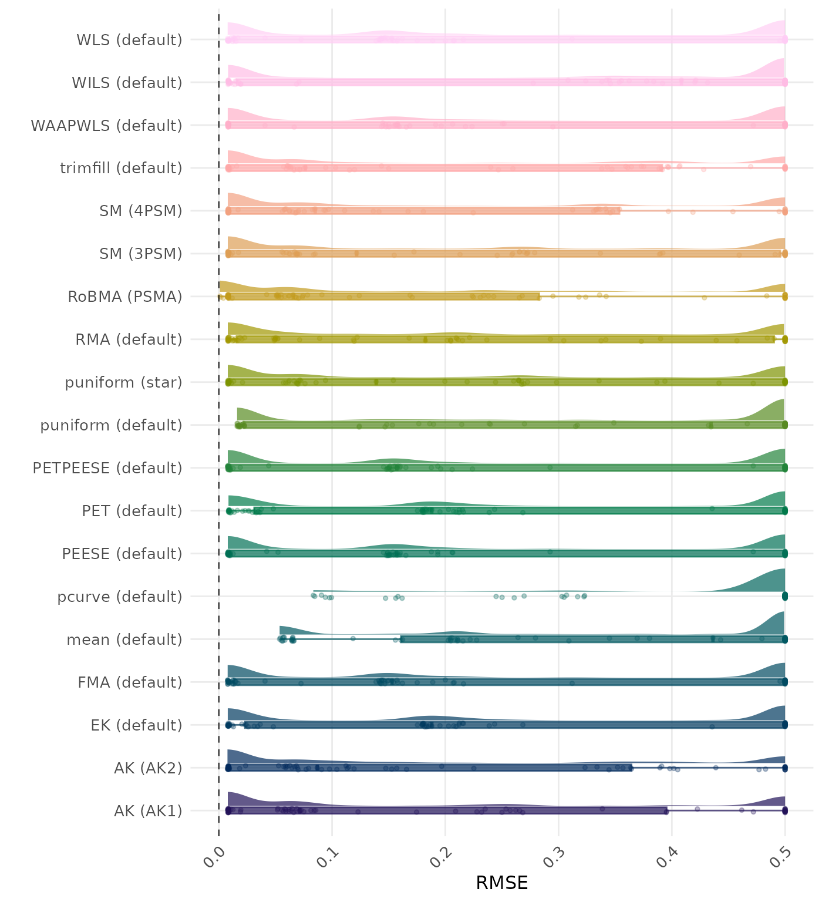
RMSE (Root Mean Square Error) is an overall summary measure of estimation performance that combines bias and empirical SE. RMSE is the square root of the average squared difference between the meta-analytic estimate and the true effect across simulation runs. A lower RMSE indicates a better method. Values larger than 0.5 are visualized as 0.5.
Bias is the average difference between the meta-analytic estimate and the true effect across simulation runs. Ideally, this value should be close to 0. Values lower than -0.5 or larger than 0.5 are visualized as -0.5 and 0.5 respectively.
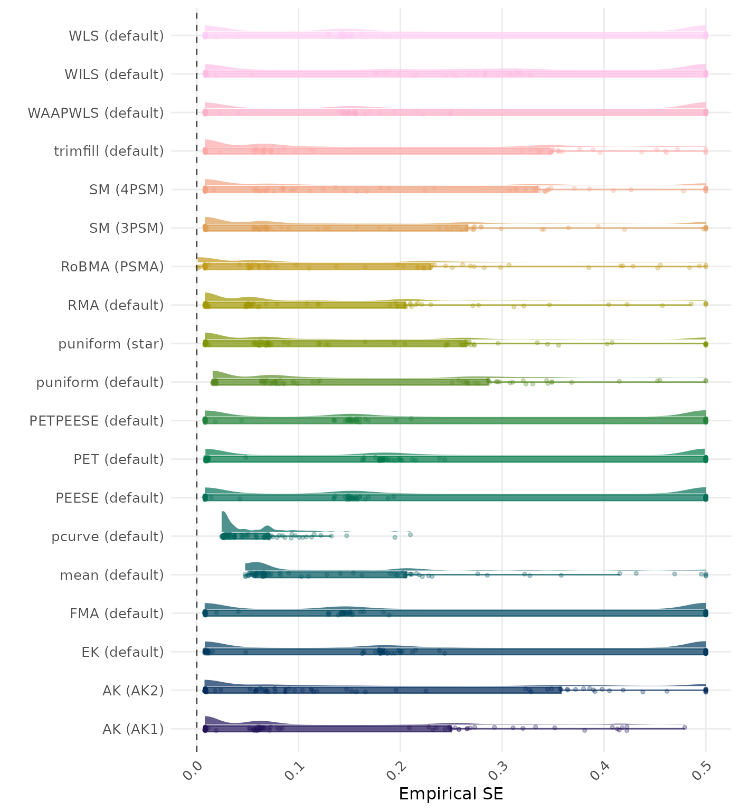
The empirical SE is the standard deviation of the meta-analytic estimate across simulation runs. A lower empirical SE indicates less variability and better method performance. Values larger than 0.5 are visualized as 0.5.
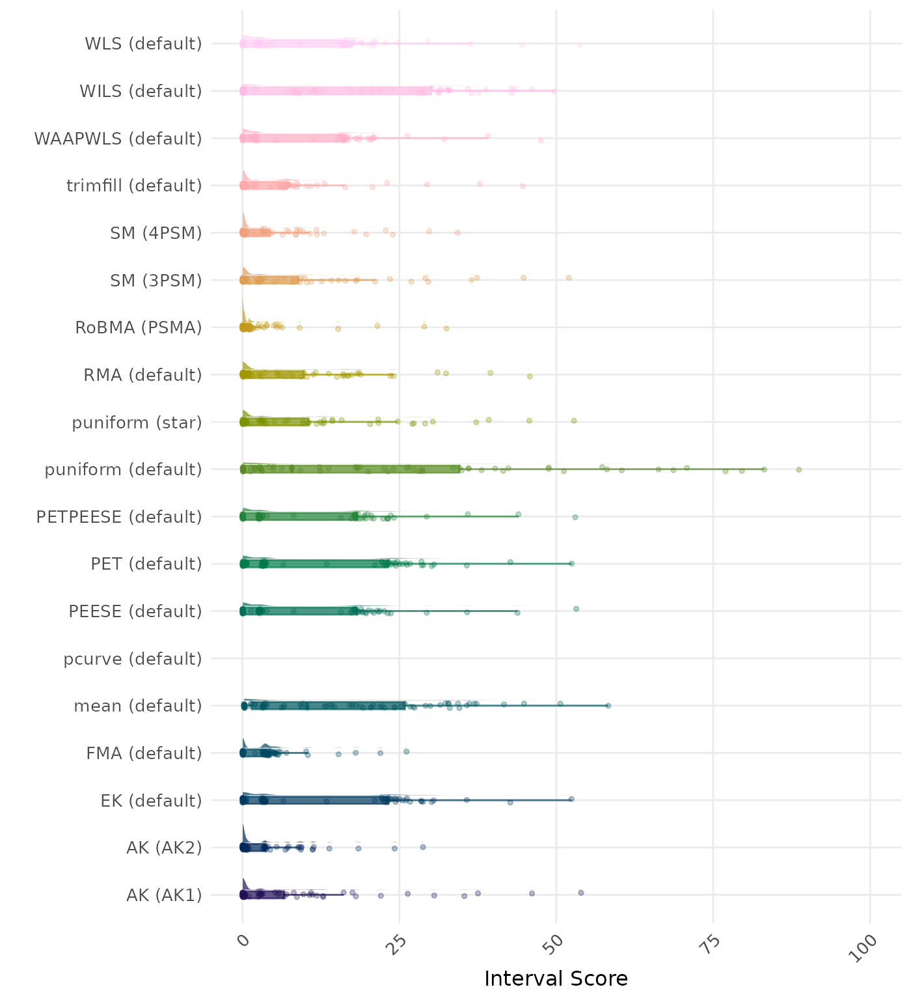
The interval score measures the accuracy of a confidence interval by combining its width and coverage. It penalizes intervals that are too wide or that fail to include the true value. A lower interval score indicates a better method. Values larger than 100 are visualized as 100.
95% CI coverage is the proportion of simulation runs in which the 95% confidence interval contained the true effect. Ideally, this value should be close to the nominal level of 95%.
95% CI width is the average length of the 95% confidence interval for the true effect. A lower average 95% CI length indicates a better method.
The positive likelihood ratio is an overall summary measure of hypothesis testing performance that combines power and type I error rate. It indicates how much a significant test result changes the odds of the alternative hypothesis versus the null hypothesis. A useful method has a positive likelihood ratio greater than 1 (or a log positive likelihood ratio greater than 0). A higher (log) positive likelihood ratio indicates a better method.
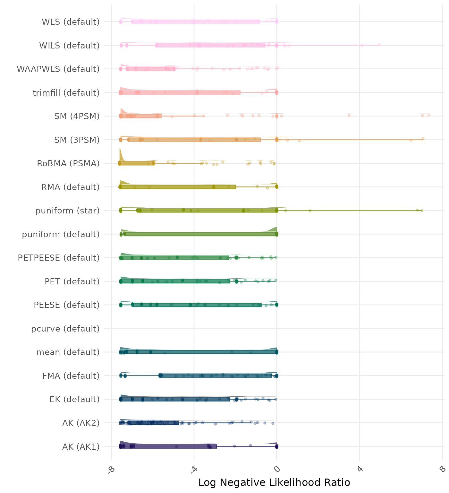
The negative likelihood ratio is an overall summary measure of hypothesis testing performance that combines power and type I error rate. It indicates how much a non-significant test result changes the odds of the alternative hypothesis versus the null hypothesis. A useful method has a negative likelihood ratio less than 1 (or a log negative likelihood ratio less than 0). A lower (log) negative likelihood ratio indicates a better method.

The type I error rate is the proportion of simulation runs in which the null hypothesis of no effect was incorrectly rejected when it was true. Ideally, this value should be close to the nominal level of 5%.
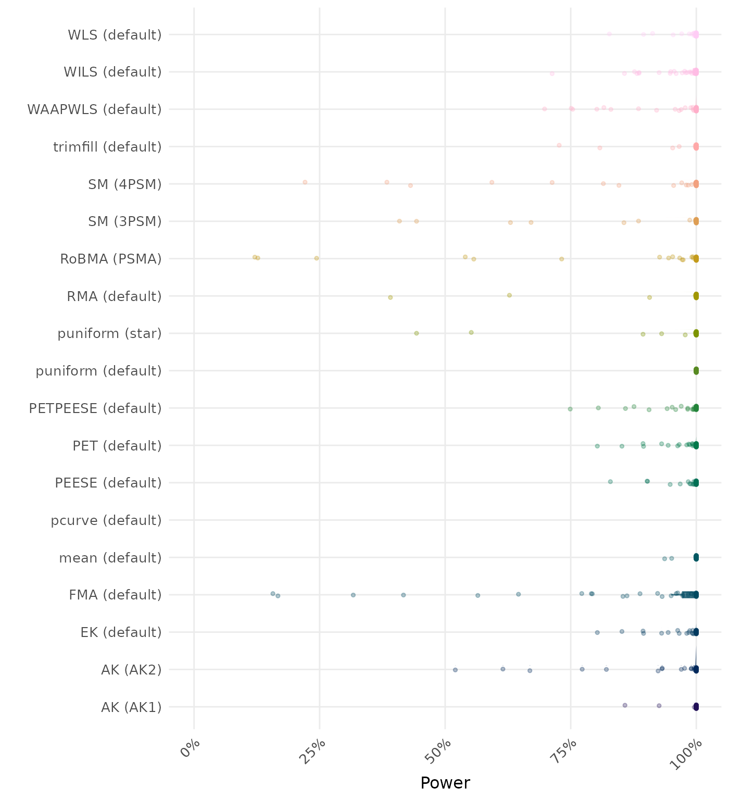
The power is the proportion of simulation runs in which the null hypothesis of no effect was correctly rejected when the alternative hypothesis was true. A higher power indicates a better method.
By-Condition Performance (Replacement in Case of Non-Convergence)
The results below incorporate method replacement to handle non-convergence. If a method fails to converge, its results are replaced with the results from a simpler method (e.g., random-effects meta-analysis without publication bias adjustment). This emulates what a data analyst may do in practice in case a method does not converge. However, note that these results do not correspond to “pure” method performance as they might combine multiple different methods. See Method Replacement Strategy for details of the method replacement specification.
RMSE (Root Mean Square Error) is an overall summary measure of estimation performance that combines bias and empirical SE. RMSE is the square root of the average squared difference between the meta-analytic estimate and the true effect across simulation runs. A lower RMSE indicates a better method. Values larger than 0.5 are visualized as 0.5.
Bias is the average difference between the meta-analytic estimate and the true effect across simulation runs. Ideally, this value should be close to 0. Values lower than -0.5 or larger than 0.5 are visualized as -0.5 and 0.5 respectively.
The empirical SE is the standard deviation of the meta-analytic estimate across simulation runs. A lower empirical SE indicates less variability and better method performance. Values larger than 0.5 are visualized as 0.5.
The interval score measures the accuracy of a confidence interval by combining its width and coverage. It penalizes intervals that are too wide or that fail to include the true value. A lower interval score indicates a better method. Values larger than 100 are visualized as 100.
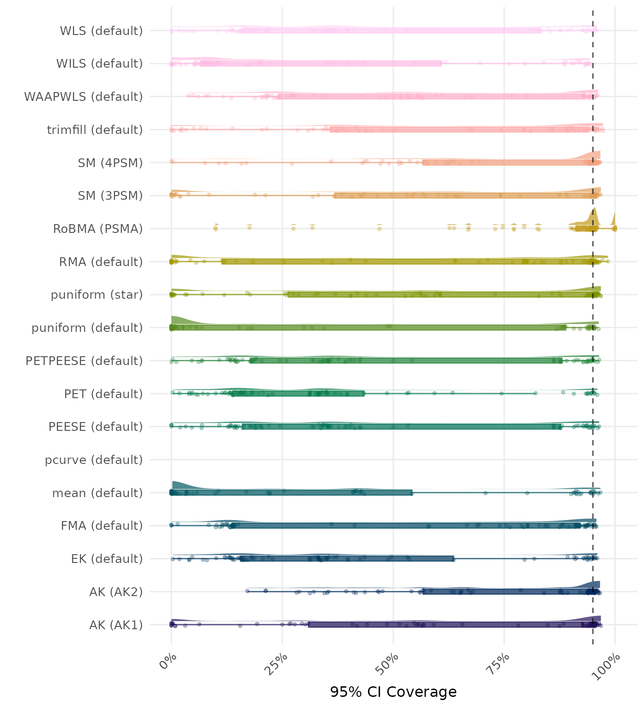
95% CI coverage is the proportion of simulation runs in which the 95% confidence interval contained the true effect. Ideally, this value should be close to the nominal level of 95%.

95% CI width is the average length of the 95% confidence interval for the true effect. A lower average 95% CI length indicates a better method.
The positive likelihood ratio is an overall summary measure of hypothesis testing performance that combines power and type I error rate. It indicates how much a significant test result changes the odds of the alternative hypothesis versus the null hypothesis. A useful method has a positive likelihood ratio greater than 1 (or a log positive likelihood ratio greater than 0). A higher (log) positive likelihood ratio indicates a better method.
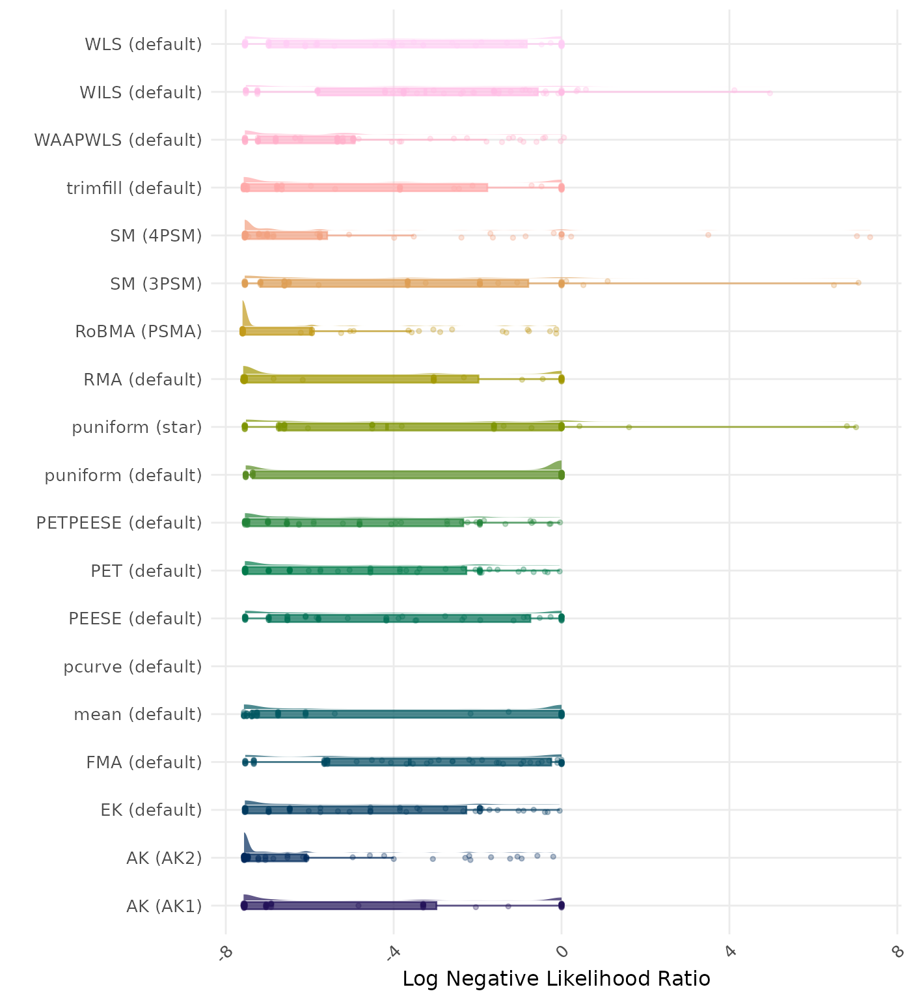
The negative likelihood ratio is an overall summary measure of hypothesis testing performance that combines power and type I error rate. It indicates how much a non-significant test result changes the odds of the alternative hypothesis versus the null hypothesis. A useful method has a negative likelihood ratio less than 1 (or a log negative likelihood ratio less than 0). A lower (log) negative likelihood ratio indicates a better method.
The type I error rate is the proportion of simulation runs in which the null hypothesis of no effect was incorrectly rejected when it was true. Ideally, this value should be close to the nominal level of 5%.
The power is the proportion of simulation runs in which the null hypothesis of no effect was correctly rejected when the alternative hypothesis was true. A higher power indicates a better method.
Subset: Fixed Effects
These results are based on Alinaghi (2018) data-generating mechanism with a total of 27 conditions.
Average Performance
Method performance measures are aggregated across all simulated conditions to provide an overall impression of method performance. However, keep in mind that a method with a high overall ranking is not necessarily the “best” method for a particular application. To select a suitable method for your application, consider also non-aggregated performance measures in conditions most relevant to your application.
| Rank | Method | Value | Rank | Method | Value |
|---|---|---|---|---|---|
| 1 | RoBMA (PSMA) | 0.008 | 1 | RoBMA (PSMA) | 0.008 |
| 2 | AK (AK2) | 0.009 | 2 | PETPEESE (default) | 0.010 |
| 3 | PETPEESE (default) | 0.010 | 3 | PEESE (default) | 0.012 |
| 4 | PEESE (default) | 0.012 | 4 | WAAPWLS (default) | 0.012 |
| 5 | WAAPWLS (default) | 0.012 | 5 | WLS (default) | 0.014 |
| 6 | WLS (default) | 0.014 | 6 | FMA (default) | 0.014 |
| 7 | FMA (default) | 0.014 | 7 | EK (default) | 0.015 |
| 8 | trimfill (default) | 0.015 | 8 | trimfill (default) | 0.015 |
| 9 | EK (default) | 0.015 | 9 | WILS (default) | 0.016 |
| 10 | WILS (default) | 0.016 | 10 | SM (4PSM) | 0.017 |
| 11 | SM (4PSM) | 0.017 | 11 | AK (AK2) | 0.017 |
| 12 | PET (default) | 0.020 | 12 | PET (default) | 0.020 |
| 13 | RMA (default) | 0.022 | 13 | RMA (default) | 0.022 |
| 14 | AK (AK1) | 0.037 | 14 | AK (AK1) | 0.036 |
| 15 | SM (3PSM) | 0.041 | 15 | SM (3PSM) | 0.041 |
| 16 | puniform (star) | 0.047 | 16 | puniform (star) | 0.047 |
| 17 | puniform (default) | 0.080 | 17 | puniform (default) | 0.080 |
| 18 | mean (default) | 0.348 | 18 | mean (default) | 0.348 |
| 19 | pcurve (default) | 1.340 | 19 | pcurve (default) | 1.340 |
RMSE (Root Mean Square Error) is an overall summary measure of estimation performance that combines bias and empirical SE. RMSE is the square root of the average squared difference between the meta-analytic estimate and the true effect across simulation runs. A lower RMSE indicates a better method.
| Rank | Method | Value | Rank | Method | Value |
|---|---|---|---|---|---|
| 1 | AK (AK2) | 0.000 | 1 | RoBMA (PSMA) | 0.000 |
| 2 | RoBMA (PSMA) | 0.000 | 2 | PETPEESE (default) | -0.001 |
| 3 | PETPEESE (default) | -0.001 | 3 | PEESE (default) | 0.001 |
| 4 | PEESE (default) | 0.001 | 4 | trimfill (default) | 0.002 |
| 5 | trimfill (default) | 0.002 | 5 | WILS (default) | -0.003 |
| 6 | WILS (default) | -0.003 | 6 | WAAPWLS (default) | 0.003 |
| 7 | WAAPWLS (default) | 0.003 | 7 | AK (AK2) | 0.003 |
| 8 | SM (4PSM) | -0.006 | 8 | SM (4PSM) | -0.006 |
| 9 | FMA (default) | 0.007 | 9 | FMA (default) | 0.007 |
| 10 | WLS (default) | 0.007 | 10 | WLS (default) | 0.007 |
| 11 | EK (default) | -0.008 | 11 | EK (default) | -0.008 |
| 12 | RMA (default) | 0.012 | 12 | RMA (default) | 0.012 |
| 13 | PET (default) | -0.013 | 13 | PET (default) | -0.013 |
| 14 | puniform (default) | 0.018 | 14 | puniform (default) | 0.018 |
| 15 | SM (3PSM) | 0.019 | 15 | SM (3PSM) | 0.019 |
| 16 | puniform (star) | 0.025 | 16 | puniform (star) | 0.025 |
| 17 | AK (AK1) | 0.028 | 17 | AK (AK1) | 0.027 |
| 18 | mean (default) | 0.318 | 18 | mean (default) | 0.318 |
| 19 | pcurve (default) | -1.305 | 19 | pcurve (default) | -1.305 |
Bias is the average difference between the meta-analytic estimate and the true effect across simulation runs. Ideally, this value should be close to 0.
| Rank | Method | Value | Rank | Method | Value |
|---|---|---|---|---|---|
| 1 | RoBMA (PSMA) | 0.008 | 1 | RoBMA (PSMA) | 0.008 |
| 2 | AK (AK2) | 0.009 | 2 | PEESE (default) | 0.010 |
| 3 | PEESE (default) | 0.010 | 3 | WLS (default) | 0.010 |
| 4 | WLS (default) | 0.010 | 4 | FMA (default) | 0.010 |
| 5 | FMA (default) | 0.010 | 5 | PETPEESE (default) | 0.010 |
| 6 | PETPEESE (default) | 0.010 | 6 | WAAPWLS (default) | 0.010 |
| 7 | WAAPWLS (default) | 0.010 | 7 | EK (default) | 0.011 |
| 8 | EK (default) | 0.011 | 8 | WILS (default) | 0.011 |
| 9 | WILS (default) | 0.011 | 9 | PET (default) | 0.011 |
| 10 | PET (default) | 0.011 | 10 | trimfill (default) | 0.013 |
| 11 | trimfill (default) | 0.013 | 11 | SM (4PSM) | 0.014 |
| 12 | SM (4PSM) | 0.014 | 12 | RMA (default) | 0.015 |
| 13 | RMA (default) | 0.015 | 13 | AK (AK2) | 0.017 |
| 14 | puniform (star) | 0.017 | 14 | puniform (star) | 0.017 |
| 15 | AK (AK1) | 0.018 | 15 | AK (AK1) | 0.019 |
| 16 | SM (3PSM) | 0.021 | 16 | SM (3PSM) | 0.021 |
| 17 | pcurve (default) | 0.036 | 17 | pcurve (default) | 0.036 |
| 18 | mean (default) | 0.068 | 18 | mean (default) | 0.068 |
| 19 | puniform (default) | 0.075 | 19 | puniform (default) | 0.075 |
The empirical SE is the standard deviation of the meta-analytic estimate across simulation runs. A lower empirical SE indicates less variability and better method performance.
| Rank | Method | Value | Rank | Method | Value |
|---|---|---|---|---|---|
| 1 | RoBMA (PSMA) | 0.035 | 1 | RoBMA (PSMA) | 0.035 |
| 2 | AK (AK2) | 0.043 | 2 | PETPEESE (default) | 0.053 |
| 3 | PETPEESE (default) | 0.053 | 3 | PEESE (default) | 0.096 |
| 4 | PEESE (default) | 0.096 | 4 | AK (AK2) | 0.100 |
| 5 | SM (4PSM) | 0.101 | 5 | SM (4PSM) | 0.101 |
| 6 | WAAPWLS (default) | 0.108 | 6 | WAAPWLS (default) | 0.108 |
| 7 | trimfill (default) | 0.126 | 7 | trimfill (default) | 0.127 |
| 8 | WLS (default) | 0.131 | 8 | WLS (default) | 0.131 |
| 9 | FMA (default) | 0.136 | 9 | FMA (default) | 0.136 |
| 10 | EK (default) | 0.148 | 10 | EK (default) | 0.148 |
| 11 | WILS (default) | 0.172 | 11 | WILS (default) | 0.172 |
| 12 | PET (default) | 0.242 | 12 | PET (default) | 0.242 |
| 13 | RMA (default) | 0.289 | 13 | RMA (default) | 0.289 |
| 14 | puniform (default) | 0.397 | 14 | puniform (default) | 0.397 |
| 15 | AK (AK1) | 0.692 | 15 | AK (AK1) | 0.668 |
| 16 | SM (3PSM) | 0.728 | 16 | SM (3PSM) | 0.728 |
| 17 | puniform (star) | 1.047 | 17 | puniform (star) | 1.047 |
| 18 | mean (default) | 10.014 | 18 | mean (default) | 10.014 |
| 19 | pcurve (default) | NaN | 19 | pcurve (default) | NaN |
The interval score measures the accuracy of a confidence interval by combining its width and coverage. It penalizes intervals that are too wide or that fail to include the true value. A lower interval score indicates a better method.
| Rank | Method | Value | Rank | Method | Value |
|---|---|---|---|---|---|
| 1 | RoBMA (PSMA) | 0.953 | 1 | RoBMA (PSMA) | 0.953 |
| 2 | AK (AK2) | 0.952 | 2 | AK (AK2) | 0.942 |
| 3 | SM (4PSM) | 0.939 | 3 | SM (4PSM) | 0.939 |
| 4 | puniform (default) | 0.927 | 4 | puniform (default) | 0.927 |
| 5 | PETPEESE (default) | 0.920 | 5 | PETPEESE (default) | 0.920 |
| 6 | WAAPWLS (default) | 0.909 | 6 | WAAPWLS (default) | 0.909 |
| 7 | trimfill (default) | 0.905 | 7 | trimfill (default) | 0.904 |
| 8 | AK (AK1) | 0.903 | 8 | AK (AK1) | 0.901 |
| 9 | PEESE (default) | 0.886 | 9 | PEESE (default) | 0.886 |
| 10 | SM (3PSM) | 0.885 | 10 | SM (3PSM) | 0.885 |
| 11 | puniform (star) | 0.879 | 11 | puniform (star) | 0.879 |
| 12 | WLS (default) | 0.849 | 12 | WLS (default) | 0.849 |
| 13 | RMA (default) | 0.839 | 13 | RMA (default) | 0.839 |
| 14 | FMA (default) | 0.829 | 14 | FMA (default) | 0.829 |
| 15 | EK (default) | 0.757 | 15 | EK (default) | 0.757 |
| 16 | WILS (default) | 0.748 | 16 | WILS (default) | 0.748 |
| 17 | PET (default) | 0.603 | 17 | PET (default) | 0.603 |
| 18 | mean (default) | 0.378 | 18 | mean (default) | 0.378 |
| 19 | pcurve (default) | NaN | 19 | pcurve (default) | NaN |
95% CI coverage is the proportion of simulation runs in which the 95% confidence interval contained the true effect. Ideally, this value should be close to the nominal level of 95%.
| Rank | Method | Value | Rank | Method | Value |
|---|---|---|---|---|---|
| 1 | RoBMA (PSMA) | 0.029 | 1 | RoBMA (PSMA) | 0.029 |
| 2 | WILS (default) | 0.033 | 2 | WILS (default) | 0.033 |
| 3 | FMA (default) | 0.034 | 3 | FMA (default) | 0.034 |
| 4 | PEESE (default) | 0.035 | 4 | PEESE (default) | 0.035 |
| 5 | WAAPWLS (default) | 0.036 | 5 | WAAPWLS (default) | 0.036 |
| 6 | PETPEESE (default) | 0.036 | 6 | PETPEESE (default) | 0.036 |
| 7 | AK (AK2) | 0.036 | 7 | WLS (default) | 0.036 |
| 8 | WLS (default) | 0.036 | 8 | EK (default) | 0.038 |
| 9 | EK (default) | 0.038 | 9 | AK (AK2) | 0.038 |
| 10 | PET (default) | 0.040 | 10 | PET (default) | 0.040 |
| 11 | SM (4PSM) | 0.045 | 11 | SM (4PSM) | 0.045 |
| 12 | trimfill (default) | 0.053 | 12 | trimfill (default) | 0.053 |
| 13 | AK (AK1) | 0.054 | 13 | AK (AK1) | 0.053 |
| 14 | RMA (default) | 0.056 | 14 | RMA (default) | 0.056 |
| 15 | SM (3PSM) | 0.058 | 15 | SM (3PSM) | 0.058 |
| 16 | puniform (star) | 0.060 | 16 | puniform (star) | 0.060 |
| 17 | mean (default) | 0.247 | 17 | mean (default) | 0.247 |
| 18 | puniform (default) | 0.326 | 18 | puniform (default) | 0.326 |
| 19 | pcurve (default) | NaN | 19 | pcurve (default) | NaN |
95% CI width is the average length of the 95% confidence interval for the true effect. A lower average 95% CI length indicates a better method.
| Rank | Method | Log Value | Rank | Method | Log Value |
|---|---|---|---|---|---|
| 1 | RoBMA (PSMA) | 7.601 | 1 | RoBMA (PSMA) | 7.601 |
| 2 | AK (AK2) | 3.114 | 2 | AK (AK2) | 2.832 |
| 3 | EK (default) | 2.803 | 3 | EK (default) | 2.803 |
| 3 | PET (default) | 2.803 | 3 | PET (default) | 2.803 |
| 5 | PETPEESE (default) | 2.631 | 5 | PETPEESE (default) | 2.631 |
| 6 | RMA (default) | 2.357 | 6 | RMA (default) | 2.357 |
| 7 | puniform (default) | 2.246 | 7 | puniform (default) | 2.246 |
| 8 | AK (AK1) | 2.233 | 8 | AK (AK1) | 2.236 |
| 9 | trimfill (default) | 2.164 | 9 | trimfill (default) | 2.169 |
| 10 | SM (4PSM) | 2.158 | 10 | SM (4PSM) | 2.158 |
| 11 | WAAPWLS (default) | 1.936 | 11 | WAAPWLS (default) | 1.936 |
| 12 | WLS (default) | 1.900 | 12 | WLS (default) | 1.900 |
| 13 | PEESE (default) | 1.860 | 13 | PEESE (default) | 1.860 |
| 14 | mean (default) | 1.671 | 14 | mean (default) | 1.671 |
| 15 | FMA (default) | 1.398 | 15 | FMA (default) | 1.398 |
| 16 | WILS (default) | 1.255 | 16 | WILS (default) | 1.255 |
| 17 | puniform (star) | 1.106 | 17 | puniform (star) | 1.106 |
| 18 | SM (3PSM) | 1.100 | 18 | SM (3PSM) | 1.100 |
| 19 | pcurve (default) | NaN | 19 | pcurve (default) | NaN |
The positive likelihood ratio is an overall summary measure of hypothesis testing performance that combines power and type I error rate. It indicates how much a significant test result changes the odds of the alternative hypothesis versus the null hypothesis. A useful method has a positive likelihood ratio greater than 1 (or a log positive likelihood ratio greater than 0). A higher (log) positive likelihood ratio indicates a better method.
| Rank | Method | Log Value | Rank | Method | Log Value |
|---|---|---|---|---|---|
| 1 | RoBMA (PSMA) | -7.601 | 1 | RoBMA (PSMA) | -7.601 |
| 2 | EK (default) | -7.539 | 2 | EK (default) | -7.539 |
| 2 | PET (default) | -7.539 | 2 | PET (default) | -7.539 |
| 4 | PETPEESE (default) | -7.523 | 4 | AK (AK2) | -7.531 |
| 5 | puniform (default) | -7.469 | 5 | PETPEESE (default) | -7.523 |
| 6 | SM (4PSM) | -7.359 | 6 | puniform (default) | -7.469 |
| 7 | WAAPWLS (default) | -6.809 | 7 | SM (4PSM) | -7.359 |
| 8 | AK (AK2) | -6.178 | 8 | WAAPWLS (default) | -6.809 |
| 9 | AK (AK1) | -6.073 | 9 | AK (AK1) | -6.141 |
| 10 | SM (3PSM) | -5.936 | 10 | SM (3PSM) | -5.936 |
| 11 | RMA (default) | -5.045 | 11 | RMA (default) | -5.045 |
| 12 | trimfill (default) | -5.043 | 12 | trimfill (default) | -5.040 |
| 13 | WLS (default) | -5.028 | 13 | WLS (default) | -5.028 |
| 14 | PEESE (default) | -5.026 | 14 | PEESE (default) | -5.026 |
| 15 | mean (default) | -4.983 | 15 | mean (default) | -4.983 |
| 16 | FMA (default) | -4.956 | 16 | FMA (default) | -4.956 |
| 17 | WILS (default) | -4.923 | 17 | WILS (default) | -4.923 |
| 18 | puniform (star) | -4.716 | 18 | puniform (star) | -4.716 |
| 19 | pcurve (default) | NaN | 19 | pcurve (default) | NaN |
The negative likelihood ratio is an overall summary measure of hypothesis testing performance that combines power and type I error rate. It indicates how much a non-significant test result changes the odds of the alternative hypothesis versus the null hypothesis. A useful method has a negative likelihood ratio less than 1 (or a log negative likelihood ratio less than 0). A lower (log) negative likelihood ratio indicates a better method.
| Rank | Method | Value | Rank | Method | Value |
|---|---|---|---|---|---|
| 1 | RoBMA (PSMA) | 0.000 | 1 | RoBMA (PSMA) | 0.000 |
| 2 | AK (AK2) | 0.044 | 2 | EK (default) | 0.060 |
| 3 | EK (default) | 0.060 | 2 | PET (default) | 0.060 |
| 3 | PET (default) | 0.060 | 4 | AK (AK2) | 0.067 |
| 5 | PETPEESE (default) | 0.075 | 5 | PETPEESE (default) | 0.075 |
| 6 | puniform (default) | 0.121 | 6 | puniform (default) | 0.121 |
| 7 | SM (4PSM) | 0.187 | 7 | SM (4PSM) | 0.187 |
| 8 | WAAPWLS (default) | 0.337 | 8 | WAAPWLS (default) | 0.337 |
| 9 | AK (AK1) | 0.353 | 9 | AK (AK1) | 0.353 |
| 10 | RMA (default) | 0.356 | 10 | RMA (default) | 0.356 |
| 11 | trimfill (default) | 0.360 | 11 | trimfill (default) | 0.360 |
| 12 | WLS (default) | 0.372 | 12 | WLS (default) | 0.372 |
| 13 | PEESE (default) | 0.374 | 13 | PEESE (default) | 0.374 |
| 14 | mean (default) | 0.410 | 14 | mean (default) | 0.410 |
| 15 | FMA (default) | 0.433 | 15 | FMA (default) | 0.433 |
| 16 | WILS (default) | 0.459 | 16 | WILS (default) | 0.459 |
| 17 | SM (3PSM) | 0.557 | 17 | SM (3PSM) | 0.557 |
| 18 | puniform (star) | 0.563 | 18 | puniform (star) | 0.563 |
| 19 | pcurve (default) | NaN | 19 | pcurve (default) | NaN |
The type I error rate is the proportion of simulation runs in which the null hypothesis of no effect was incorrectly rejected when it was true. Ideally, this value should be close to the nominal level of 5%.
| Rank | Method | Value | Rank | Method | Value |
|---|---|---|---|---|---|
| 1 | AK (AK1) | 1 | 1 | AK (AK1) | 1 |
| 1 | AK (AK2) | 1 | 1 | AK (AK2) | 1 |
| 1 | EK (default) | 1 | 1 | EK (default) | 1 |
| 1 | FMA (default) | 1 | 1 | FMA (default) | 1 |
| 1 | mean (default) | 1 | 1 | mean (default) | 1 |
| 1 | PEESE (default) | 1 | 1 | PEESE (default) | 1 |
| 1 | PET (default) | 1 | 1 | PET (default) | 1 |
| 1 | PETPEESE (default) | 1 | 1 | PETPEESE (default) | 1 |
| 1 | puniform (default) | 1 | 1 | puniform (default) | 1 |
| 1 | puniform (star) | 1 | 1 | puniform (star) | 1 |
| 1 | RMA (default) | 1 | 1 | RMA (default) | 1 |
| 1 | RoBMA (PSMA) | 1 | 1 | RoBMA (PSMA) | 1 |
| 1 | SM (3PSM) | 1 | 1 | SM (3PSM) | 1 |
| 1 | SM (4PSM) | 1 | 1 | SM (4PSM) | 1 |
| 1 | trimfill (default) | 1 | 1 | trimfill (default) | 1 |
| 1 | WAAPWLS (default) | 1 | 1 | WAAPWLS (default) | 1 |
| 1 | WILS (default) | 1 | 1 | WILS (default) | 1 |
| 1 | WLS (default) | 1 | 1 | WLS (default) | 1 |
| 19 | pcurve (default) | NaN | 19 | pcurve (default) | NaN |
The power is the proportion of simulation runs in which the null hypothesis of no effect was correctly rejected when the alternative hypothesis was true. A higher power indicates a better method.
By-Condition Performance (Conditional on Method Convergence)
The results below are conditional on method convergence. Note that the methods might differ in convergence rate and are therefore not compared on the same data sets.
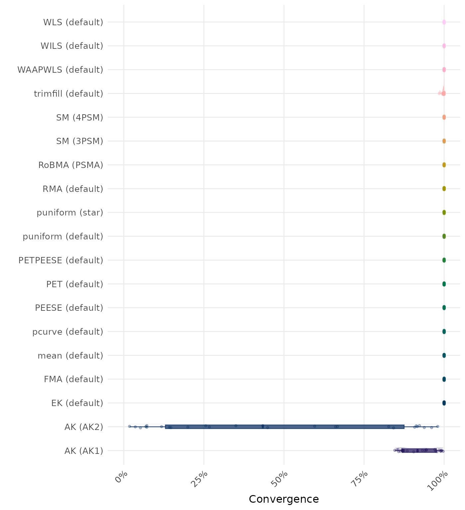
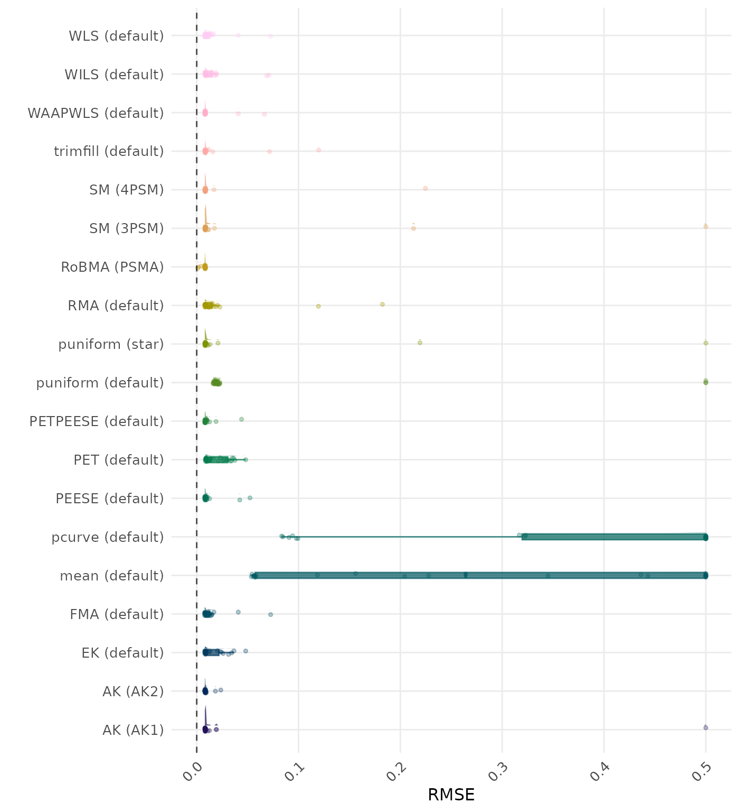
RMSE (Root Mean Square Error) is an overall summary measure of estimation performance that combines bias and empirical SE. RMSE is the square root of the average squared difference between the meta-analytic estimate and the true effect across simulation runs. A lower RMSE indicates a better method. Values larger than 0.5 are visualized as 0.5.
Bias is the average difference between the meta-analytic estimate and the true effect across simulation runs. Ideally, this value should be close to 0. Values lower than -0.5 or larger than 0.5 are visualized as -0.5 and 0.5 respectively.
The empirical SE is the standard deviation of the meta-analytic estimate across simulation runs. A lower empirical SE indicates less variability and better method performance. Values larger than 0.5 are visualized as 0.5.
The interval score measures the accuracy of a confidence interval by combining its width and coverage. It penalizes intervals that are too wide or that fail to include the true value. A lower interval score indicates a better method. Values larger than 100 are visualized as 100.
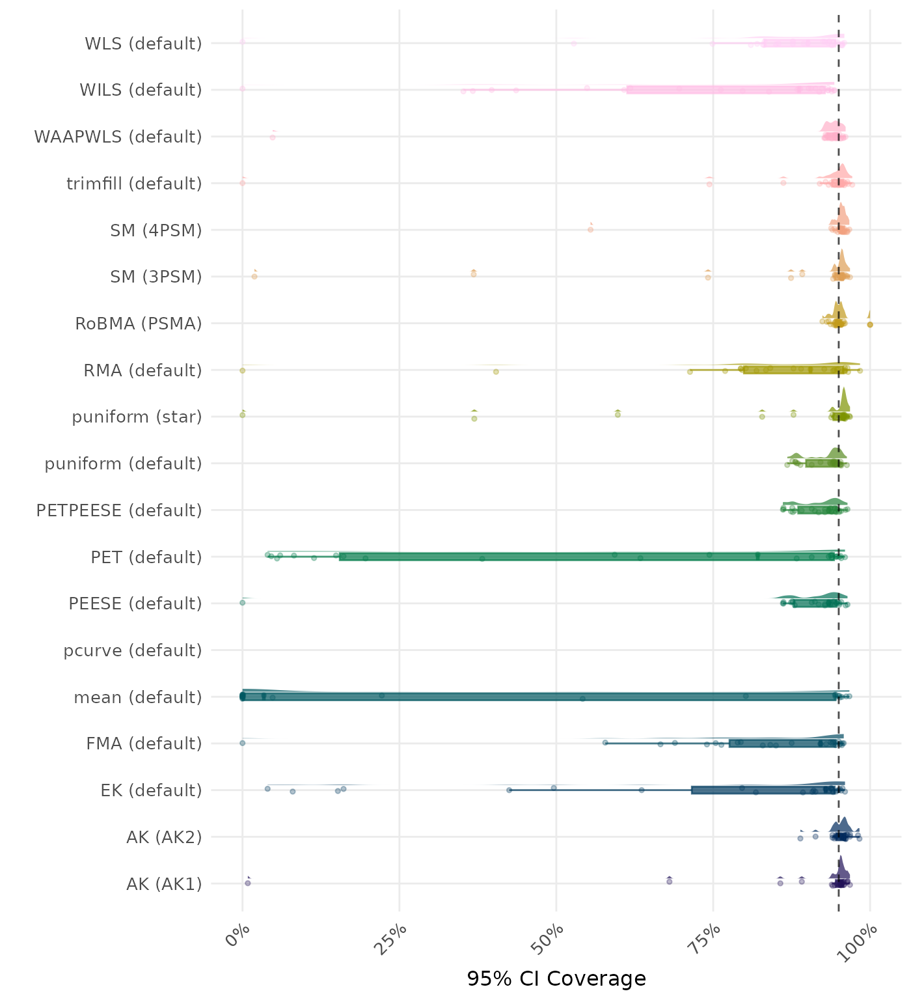
95% CI coverage is the proportion of simulation runs in which the 95% confidence interval contained the true effect. Ideally, this value should be close to the nominal level of 95%.
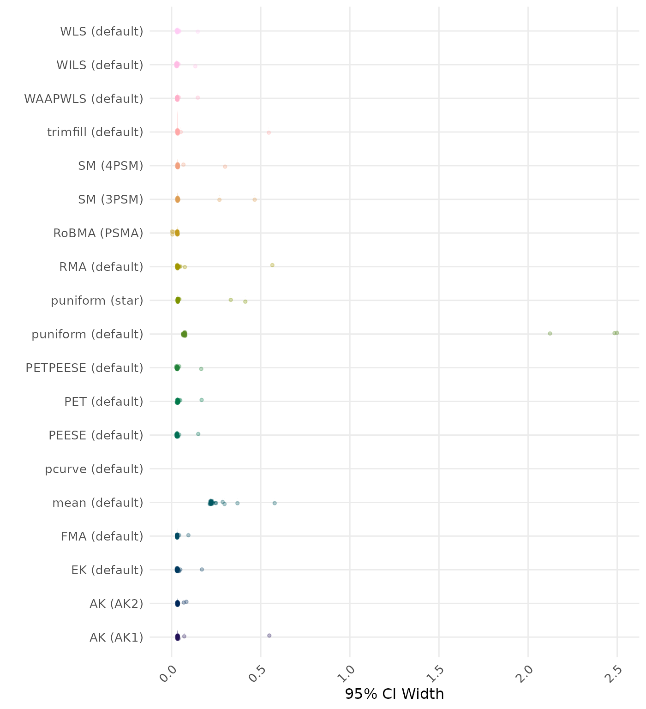
95% CI width is the average length of the 95% confidence interval for the true effect. A lower average 95% CI length indicates a better method.
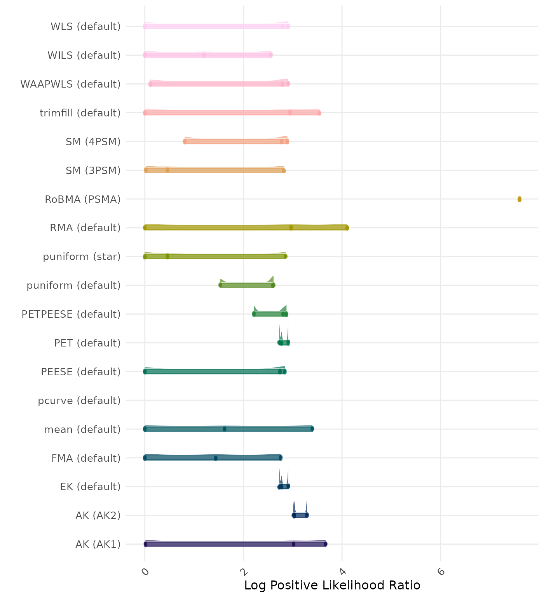
The positive likelihood ratio is an overall summary measure of hypothesis testing performance that combines power and type I error rate. It indicates how much a significant test result changes the odds of the alternative hypothesis versus the null hypothesis. A useful method has a positive likelihood ratio greater than 1 (or a log positive likelihood ratio greater than 0). A higher (log) positive likelihood ratio indicates a better method.
The negative likelihood ratio is an overall summary measure of hypothesis testing performance that combines power and type I error rate. It indicates how much a non-significant test result changes the odds of the alternative hypothesis versus the null hypothesis. A useful method has a negative likelihood ratio less than 1 (or a log negative likelihood ratio less than 0). A lower (log) negative likelihood ratio indicates a better method.
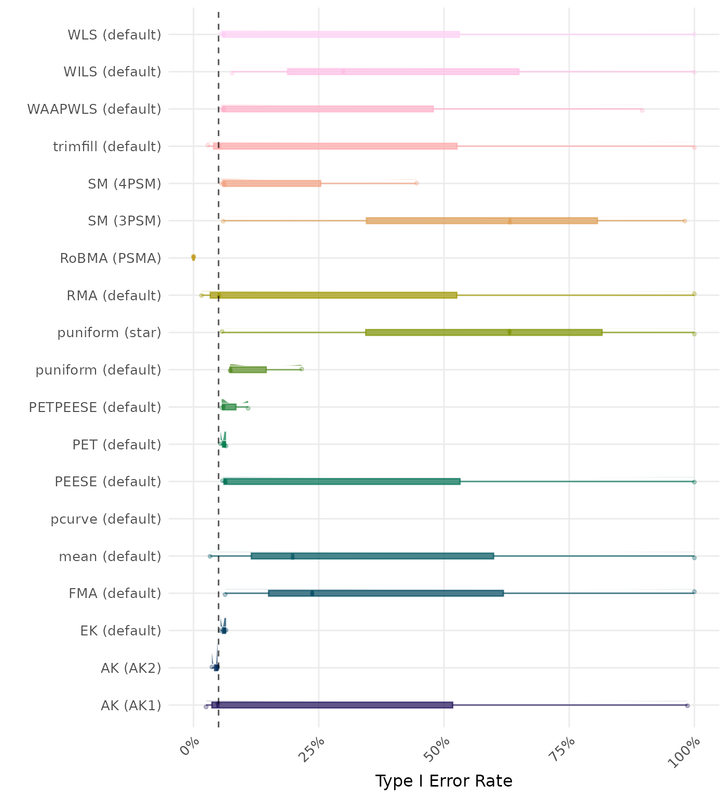
The type I error rate is the proportion of simulation runs in which the null hypothesis of no effect was incorrectly rejected when it was true. Ideally, this value should be close to the nominal level of 5%.
The power is the proportion of simulation runs in which the null hypothesis of no effect was correctly rejected when the alternative hypothesis was true. A higher power indicates a better method.
By-Condition Performance (Replacement in Case of Non-Convergence)
The results below incorporate method replacement to handle non-convergence. If a method fails to converge, its results are replaced with the results from a simpler method (e.g., random-effects meta-analysis without publication bias adjustment). This emulates what a data analyst may do in practice in case a method does not converge. However, note that these results do not correspond to “pure” method performance as they might combine multiple different methods. See Method Replacement Strategy for details of the method replacement specification.
RMSE (Root Mean Square Error) is an overall summary measure of estimation performance that combines bias and empirical SE. RMSE is the square root of the average squared difference between the meta-analytic estimate and the true effect across simulation runs. A lower RMSE indicates a better method. Values larger than 0.5 are visualized as 0.5.
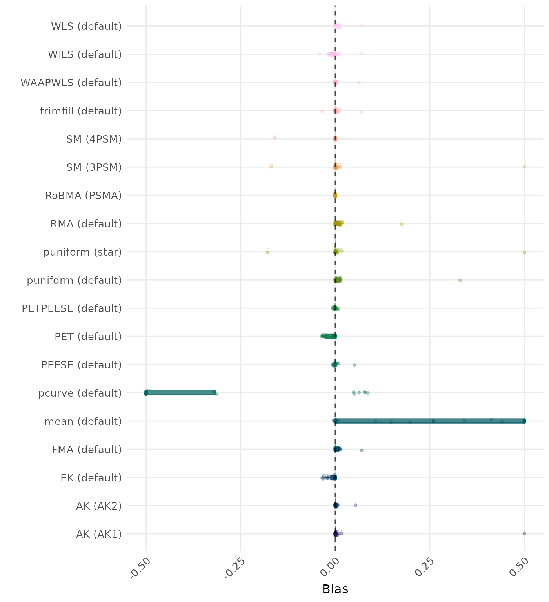
Bias is the average difference between the meta-analytic estimate and the true effect across simulation runs. Ideally, this value should be close to 0. Values lower than -0.5 or larger than 0.5 are visualized as -0.5 and 0.5 respectively.
The empirical SE is the standard deviation of the meta-analytic estimate across simulation runs. A lower empirical SE indicates less variability and better method performance. Values larger than 0.5 are visualized as 0.5.
The interval score measures the accuracy of a confidence interval by combining its width and coverage. It penalizes intervals that are too wide or that fail to include the true value. A lower interval score indicates a better method. Values larger than 100 are visualized as 100.
95% CI coverage is the proportion of simulation runs in which the 95% confidence interval contained the true effect. Ideally, this value should be close to the nominal level of 95%.
95% CI width is the average length of the 95% confidence interval for the true effect. A lower average 95% CI length indicates a better method.
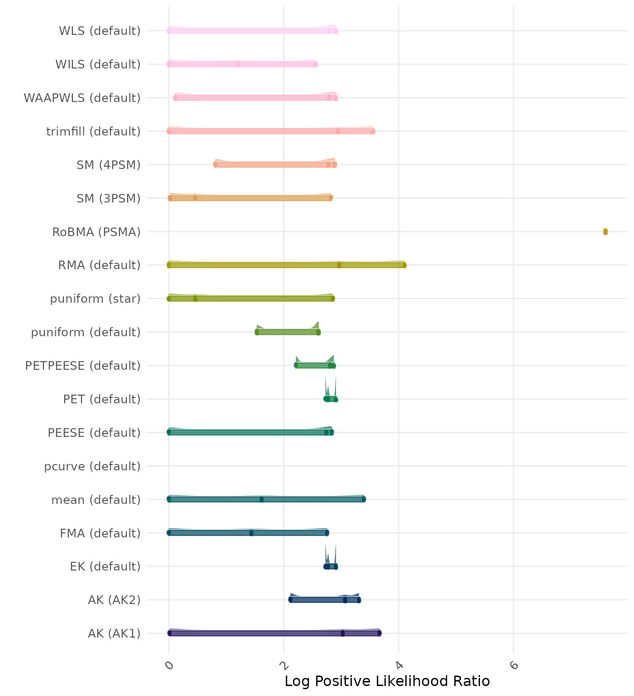
The positive likelihood ratio is an overall summary measure of hypothesis testing performance that combines power and type I error rate. It indicates how much a significant test result changes the odds of the alternative hypothesis versus the null hypothesis. A useful method has a positive likelihood ratio greater than 1 (or a log positive likelihood ratio greater than 0). A higher (log) positive likelihood ratio indicates a better method.
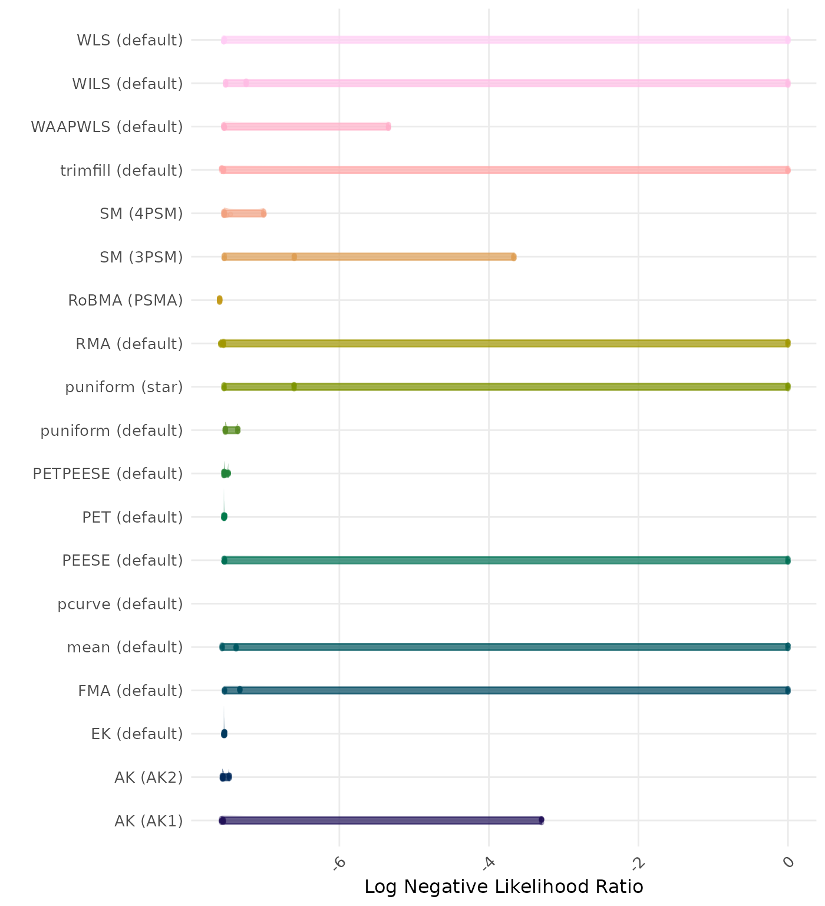
The negative likelihood ratio is an overall summary measure of hypothesis testing performance that combines power and type I error rate. It indicates how much a non-significant test result changes the odds of the alternative hypothesis versus the null hypothesis. A useful method has a negative likelihood ratio less than 1 (or a log negative likelihood ratio less than 0). A lower (log) negative likelihood ratio indicates a better method.
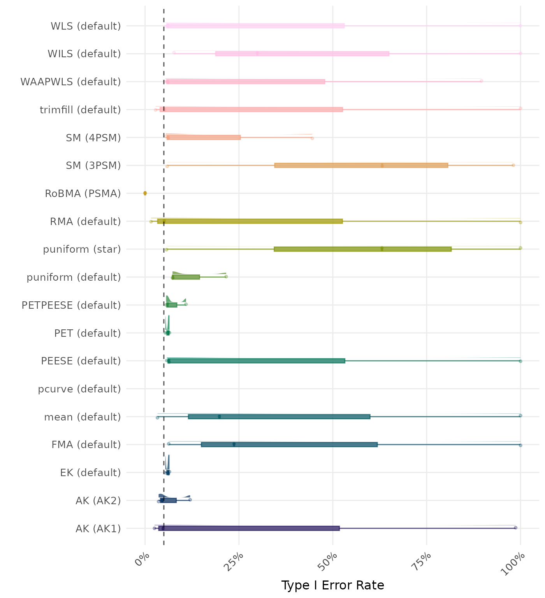
The type I error rate is the proportion of simulation runs in which the null hypothesis of no effect was incorrectly rejected when it was true. Ideally, this value should be close to the nominal level of 5%.
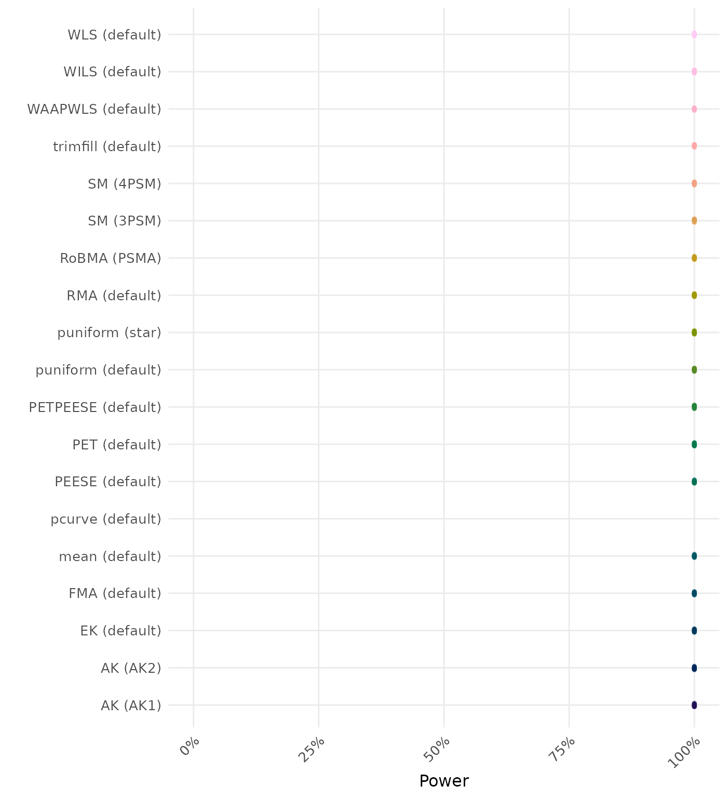
The power is the proportion of simulation runs in which the null hypothesis of no effect was correctly rejected when the alternative hypothesis was true. A higher power indicates a better method.
Subset: Random Effects
These results are based on Alinaghi (2018) data-generating mechanism with a total of 27 conditions.
Average Performance
Method performance measures are aggregated across all simulated conditions to provide an overall impression of method performance. However, keep in mind that a method with a high overall ranking is not necessarily the “best” method for a particular application. To select a suitable method for your application, consider also non-aggregated performance measures in conditions most relevant to your application.
| Rank | Method | Value | Rank | Method | Value |
|---|---|---|---|---|---|
| 1 | RoBMA (PSMA) | 0.098 | 1 | RoBMA (PSMA) | 0.098 |
| 2 | AK (AK2) | 0.101 | 2 | AK (AK2) | 0.120 |
| 3 | trimfill (default) | 0.151 | 3 | trimfill (default) | 0.151 |
| 4 | AK (AK1) | 0.173 | 4 | AK (AK1) | 0.173 |
| 5 | SM (4PSM) | 0.186 | 5 | SM (4PSM) | 0.186 |
| 6 | PEESE (default) | 0.198 | 6 | PEESE (default) | 0.198 |
| 7 | PETPEESE (default) | 0.199 | 7 | PETPEESE (default) | 0.199 |
| 8 | FMA (default) | 0.199 | 8 | FMA (default) | 0.199 |
| 8 | WLS (default) | 0.199 | 8 | WLS (default) | 0.199 |
| 10 | WAAPWLS (default) | 0.207 | 10 | WAAPWLS (default) | 0.207 |
| 11 | EK (default) | 0.223 | 11 | EK (default) | 0.223 |
| 11 | PET (default) | 0.223 | 11 | PET (default) | 0.223 |
| 13 | RMA (default) | 0.272 | 13 | RMA (default) | 0.272 |
| 14 | SM (3PSM) | 0.280 | 14 | SM (3PSM) | 0.280 |
| 15 | puniform (star) | 0.287 | 15 | puniform (star) | 0.287 |
| 16 | puniform (default) | 0.448 | 16 | puniform (default) | 0.448 |
| 17 | mean (default) | 0.461 | 17 | mean (default) | 0.461 |
| 18 | WILS (default) | 0.475 | 18 | WILS (default) | 0.475 |
| 19 | pcurve (default) | 1.405 | 19 | pcurve (default) | 1.405 |
RMSE (Root Mean Square Error) is an overall summary measure of estimation performance that combines bias and empirical SE. RMSE is the square root of the average squared difference between the meta-analytic estimate and the true effect across simulation runs. A lower RMSE indicates a better method.
| Rank | Method | Value | Rank | Method | Value |
|---|---|---|---|---|---|
| 1 | AK (AK2) | 0.003 | 1 | SM (3PSM) | 0.020 |
| 2 | SM (3PSM) | 0.020 | 2 | AK (AK2) | 0.028 |
| 3 | EK (default) | 0.033 | 3 | EK (default) | 0.033 |
| 3 | PET (default) | 0.033 | 3 | PET (default) | 0.033 |
| 5 | puniform (star) | 0.036 | 5 | puniform (star) | 0.036 |
| 6 | RoBMA (PSMA) | -0.040 | 6 | RoBMA (PSMA) | -0.040 |
| 7 | PETPEESE (default) | 0.070 | 7 | PETPEESE (default) | 0.070 |
| 8 | PEESE (default) | 0.070 | 8 | PEESE (default) | 0.070 |
| 9 | WAAPWLS (default) | 0.072 | 9 | WAAPWLS (default) | 0.072 |
| 10 | FMA (default) | 0.086 | 10 | FMA (default) | 0.086 |
| 11 | WLS (default) | 0.086 | 11 | WLS (default) | 0.086 |
| 12 | trimfill (default) | 0.093 | 12 | trimfill (default) | 0.093 |
| 13 | SM (4PSM) | -0.107 | 13 | SM (4PSM) | -0.107 |
| 14 | AK (AK1) | 0.131 | 14 | AK (AK1) | 0.131 |
| 15 | RMA (default) | 0.247 | 15 | RMA (default) | 0.247 |
| 16 | WILS (default) | -0.283 | 16 | WILS (default) | -0.283 |
| 17 | mean (default) | 0.430 | 17 | mean (default) | 0.430 |
| 18 | puniform (default) | 0.438 | 18 | puniform (default) | 0.438 |
| 19 | pcurve (default) | -1.236 | 19 | pcurve (default) | -1.236 |
Bias is the average difference between the meta-analytic estimate and the true effect across simulation runs. Ideally, this value should be close to 0.
| Rank | Method | Value | Rank | Method | Value |
|---|---|---|---|---|---|
| 1 | pcurve (default) | 0.034 | 1 | pcurve (default) | 0.034 |
| 2 | RMA (default) | 0.058 | 2 | RMA (default) | 0.058 |
| 3 | AK (AK1) | 0.064 | 3 | AK (AK1) | 0.064 |
| 4 | trimfill (default) | 0.069 | 4 | trimfill (default) | 0.069 |
| 5 | mean (default) | 0.076 | 5 | mean (default) | 0.076 |
| 6 | puniform (default) | 0.080 | 6 | puniform (default) | 0.080 |
| 7 | SM (3PSM) | 0.082 | 7 | SM (3PSM) | 0.082 |
| 8 | puniform (star) | 0.085 | 8 | puniform (star) | 0.085 |
| 9 | RoBMA (PSMA) | 0.085 | 9 | RoBMA (PSMA) | 0.085 |
| 10 | AK (AK2) | 0.101 | 10 | SM (4PSM) | 0.104 |
| 11 | SM (4PSM) | 0.104 | 11 | AK (AK2) | 0.110 |
| 12 | FMA (default) | 0.148 | 12 | FMA (default) | 0.148 |
| 13 | WLS (default) | 0.148 | 13 | WLS (default) | 0.148 |
| 14 | PEESE (default) | 0.155 | 14 | PEESE (default) | 0.155 |
| 15 | PETPEESE (default) | 0.156 | 15 | PETPEESE (default) | 0.156 |
| 16 | WAAPWLS (default) | 0.166 | 16 | WAAPWLS (default) | 0.166 |
| 17 | EK (default) | 0.190 | 17 | EK (default) | 0.190 |
| 17 | PET (default) | 0.190 | 17 | PET (default) | 0.190 |
| 19 | WILS (default) | 0.270 | 19 | WILS (default) | 0.270 |
The empirical SE is the standard deviation of the meta-analytic estimate across simulation runs. A lower empirical SE indicates less variability and better method performance.
| Rank | Method | Value | Rank | Method | Value |
|---|---|---|---|---|---|
| 1 | RoBMA (PSMA) | 0.426 | 1 | RoBMA (PSMA) | 0.426 |
| 2 | AK (AK2) | 0.471 | 2 | AK (AK2) | 0.887 |
| 3 | SM (4PSM) | 2.479 | 3 | SM (4PSM) | 2.479 |
| 4 | trimfill (default) | 2.707 | 4 | trimfill (default) | 2.707 |
| 5 | WAAPWLS (default) | 2.898 | 5 | WAAPWLS (default) | 2.898 |
| 6 | AK (AK1) | 3.950 | 6 | AK (AK1) | 3.950 |
| 7 | PEESE (default) | 4.234 | 7 | PEESE (default) | 4.234 |
| 8 | PETPEESE (default) | 4.247 | 8 | PETPEESE (default) | 4.247 |
| 9 | WLS (default) | 4.339 | 9 | WLS (default) | 4.339 |
| 10 | EK (default) | 4.512 | 10 | EK (default) | 4.512 |
| 11 | PET (default) | 4.516 | 11 | PET (default) | 4.516 |
| 12 | FMA (default) | 5.792 | 12 | FMA (default) | 5.792 |
| 13 | SM (3PSM) | 6.604 | 13 | SM (3PSM) | 6.604 |
| 14 | puniform (star) | 6.865 | 14 | puniform (star) | 6.865 |
| 15 | RMA (default) | 7.368 | 15 | RMA (default) | 7.368 |
| 16 | puniform (default) | 12.917 | 16 | puniform (default) | 12.917 |
| 17 | WILS (default) | 14.064 | 17 | WILS (default) | 14.064 |
| 18 | mean (default) | 14.386 | 18 | mean (default) | 14.386 |
| 19 | pcurve (default) | NaN | 19 | pcurve (default) | NaN |
The interval score measures the accuracy of a confidence interval by combining its width and coverage. It penalizes intervals that are too wide or that fail to include the true value. A lower interval score indicates a better method.
| Rank | Method | Value | Rank | Method | Value |
|---|---|---|---|---|---|
| 1 | AK (AK2) | 0.951 | 1 | RoBMA (PSMA) | 0.941 |
| 2 | RoBMA (PSMA) | 0.941 | 2 | AK (AK2) | 0.866 |
| 3 | SM (4PSM) | 0.835 | 3 | SM (4PSM) | 0.835 |
| 4 | AK (AK1) | 0.719 | 4 | AK (AK1) | 0.719 |
| 5 | trimfill (default) | 0.626 | 5 | trimfill (default) | 0.626 |
| 6 | SM (3PSM) | 0.598 | 6 | SM (3PSM) | 0.598 |
| 7 | puniform (star) | 0.586 | 7 | puniform (star) | 0.586 |
| 8 | WAAPWLS (default) | 0.529 | 8 | WAAPWLS (default) | 0.529 |
| 9 | RMA (default) | 0.422 | 9 | RMA (default) | 0.422 |
| 10 | mean (default) | 0.342 | 10 | mean (default) | 0.342 |
| 11 | PETPEESE (default) | 0.335 | 11 | PETPEESE (default) | 0.335 |
| 12 | EK (default) | 0.335 | 12 | EK (default) | 0.335 |
| 13 | PEESE (default) | 0.335 | 13 | PEESE (default) | 0.335 |
| 14 | PET (default) | 0.335 | 14 | PET (default) | 0.335 |
| 15 | WLS (default) | 0.330 | 15 | WLS (default) | 0.330 |
| 16 | FMA (default) | 0.113 | 16 | FMA (default) | 0.113 |
| 17 | puniform (default) | 0.098 | 17 | puniform (default) | 0.098 |
| 18 | WILS (default) | 0.091 | 18 | WILS (default) | 0.091 |
| 19 | pcurve (default) | NaN | 19 | pcurve (default) | NaN |
95% CI coverage is the proportion of simulation runs in which the 95% confidence interval contained the true effect. Ideally, this value should be close to the nominal level of 95%.
| Rank | Method | Value | Rank | Method | Value |
|---|---|---|---|---|---|
| 1 | FMA (default) | 0.051 | 1 | FMA (default) | 0.051 |
| 2 | WILS (default) | 0.147 | 2 | WILS (default) | 0.147 |
| 3 | WLS (default) | 0.153 | 3 | WLS (default) | 0.153 |
| 4 | PEESE (default) | 0.156 | 4 | PEESE (default) | 0.156 |
| 5 | PETPEESE (default) | 0.157 | 5 | PETPEESE (default) | 0.157 |
| 6 | PET (default) | 0.185 | 6 | PET (default) | 0.185 |
| 7 | EK (default) | 0.185 | 7 | EK (default) | 0.185 |
| 8 | RMA (default) | 0.228 | 8 | RMA (default) | 0.228 |
| 9 | trimfill (default) | 0.234 | 9 | trimfill (default) | 0.234 |
| 10 | mean (default) | 0.244 | 10 | mean (default) | 0.244 |
| 11 | AK (AK1) | 0.248 | 11 | AK (AK1) | 0.248 |
| 12 | puniform (default) | 0.254 | 12 | puniform (default) | 0.254 |
| 13 | WAAPWLS (default) | 0.304 | 13 | WAAPWLS (default) | 0.304 |
| 14 | RoBMA (PSMA) | 0.310 | 14 | RoBMA (PSMA) | 0.310 |
| 15 | SM (3PSM) | 0.314 | 15 | SM (3PSM) | 0.314 |
| 16 | puniform (star) | 0.324 | 16 | puniform (star) | 0.324 |
| 17 | AK (AK2) | 0.392 | 17 | AK (AK2) | 0.383 |
| 18 | SM (4PSM) | 0.408 | 18 | SM (4PSM) | 0.408 |
| 19 | pcurve (default) | NaN | 19 | pcurve (default) | NaN |
95% CI width is the average length of the 95% confidence interval for the true effect. A lower average 95% CI length indicates a better method.
| Rank | Method | Log Value | Rank | Method | Log Value |
|---|---|---|---|---|---|
| 1 | RoBMA (PSMA) | 6.663 | 1 | RoBMA (PSMA) | 6.663 |
| 2 | AK (AK2) | 3.115 | 2 | AK (AK2) | 3.117 |
| 3 | RMA (default) | 2.150 | 3 | RMA (default) | 2.150 |
| 4 | AK (AK1) | 2.110 | 4 | AK (AK1) | 2.110 |
| 5 | trimfill (default) | 1.957 | 5 | trimfill (default) | 1.957 |
| 6 | SM (4PSM) | 1.835 | 6 | SM (4PSM) | 1.835 |
| 7 | mean (default) | 1.179 | 7 | mean (default) | 1.179 |
| 8 | SM (3PSM) | 0.935 | 8 | SM (3PSM) | 0.935 |
| 9 | puniform (star) | 0.930 | 9 | puniform (star) | 0.930 |
| 10 | WAAPWLS (default) | 0.598 | 10 | WAAPWLS (default) | 0.598 |
| 11 | PETPEESE (default) | 0.403 | 11 | PETPEESE (default) | 0.403 |
| 12 | WLS (default) | 0.399 | 12 | WLS (default) | 0.399 |
| 13 | PEESE (default) | 0.395 | 13 | PEESE (default) | 0.395 |
| 14 | EK (default) | 0.384 | 14 | EK (default) | 0.384 |
| 14 | PET (default) | 0.384 | 14 | PET (default) | 0.384 |
| 16 | FMA (default) | 0.098 | 16 | FMA (default) | 0.098 |
| 17 | WILS (default) | 0.044 | 17 | WILS (default) | 0.044 |
| 18 | puniform (default) | 0.000 | 18 | puniform (default) | 0.000 |
| 19 | pcurve (default) | NaN | 19 | pcurve (default) | NaN |
The positive likelihood ratio is an overall summary measure of hypothesis testing performance that combines power and type I error rate. It indicates how much a significant test result changes the odds of the alternative hypothesis versus the null hypothesis. A useful method has a positive likelihood ratio greater than 1 (or a log positive likelihood ratio greater than 0). A higher (log) positive likelihood ratio indicates a better method.
| Rank | Method | Log Value | Rank | Method | Log Value |
|---|---|---|---|---|---|
| 1 | RoBMA (PSMA) | -6.364 | 1 | AK (AK2) | -6.830 |
| 2 | AK (AK2) | -6.064 | 2 | RoBMA (PSMA) | -6.364 |
| 3 | WAAPWLS (default) | -5.828 | 3 | WAAPWLS (default) | -5.828 |
| 4 | RMA (default) | -5.039 | 4 | RMA (default) | -5.039 |
| 5 | AK (AK1) | -5.039 | 5 | AK (AK1) | -5.039 |
| 6 | trimfill (default) | -5.023 | 6 | trimfill (default) | -5.023 |
| 7 | mean (default) | -4.918 | 7 | mean (default) | -4.918 |
| 8 | PETPEESE (default) | -4.860 | 8 | PETPEESE (default) | -4.860 |
| 9 | EK (default) | -4.812 | 9 | EK (default) | -4.812 |
| 9 | PET (default) | -4.812 | 9 | PET (default) | -4.812 |
| 11 | WLS (default) | -4.362 | 11 | WLS (default) | -4.362 |
| 12 | PEESE (default) | -4.345 | 12 | PEESE (default) | -4.345 |
| 13 | SM (4PSM) | -4.038 | 13 | SM (4PSM) | -4.038 |
| 14 | FMA (default) | -3.715 | 14 | FMA (default) | -3.715 |
| 15 | WILS (default) | -2.818 | 15 | WILS (default) | -2.818 |
| 16 | SM (3PSM) | -1.905 | 16 | SM (3PSM) | -1.905 |
| 17 | puniform (star) | -1.874 | 17 | puniform (star) | -1.874 |
| 18 | puniform (default) | 0.000 | 18 | puniform (default) | 0.000 |
| 19 | pcurve (default) | NaN | 19 | pcurve (default) | NaN |
The negative likelihood ratio is an overall summary measure of hypothesis testing performance that combines power and type I error rate. It indicates how much a non-significant test result changes the odds of the alternative hypothesis versus the null hypothesis. A useful method has a negative likelihood ratio less than 1 (or a log negative likelihood ratio less than 0). A lower (log) negative likelihood ratio indicates a better method.
| Rank | Method | Value | Rank | Method | Value |
|---|---|---|---|---|---|
| 1 | RoBMA (PSMA) | 0.002 | 1 | RoBMA (PSMA) | 0.002 |
| 2 | AK (AK2) | 0.043 | 2 | AK (AK2) | 0.043 |
| 3 | RMA (default) | 0.361 | 3 | RMA (default) | 0.361 |
| 4 | AK (AK1) | 0.361 | 4 | AK (AK1) | 0.361 |
| 5 | SM (4PSM) | 0.369 | 5 | SM (4PSM) | 0.369 |
| 6 | trimfill (default) | 0.376 | 6 | trimfill (default) | 0.376 |
| 7 | mean (default) | 0.464 | 7 | mean (default) | 0.464 |
| 8 | WAAPWLS (default) | 0.594 | 8 | WAAPWLS (default) | 0.594 |
| 9 | puniform (star) | 0.684 | 9 | puniform (star) | 0.684 |
| 9 | SM (3PSM) | 0.684 | 9 | SM (3PSM) | 0.684 |
| 11 | PETPEESE (default) | 0.702 | 11 | PETPEESE (default) | 0.702 |
| 12 | WLS (default) | 0.704 | 12 | WLS (default) | 0.704 |
| 13 | PEESE (default) | 0.707 | 13 | PEESE (default) | 0.707 |
| 14 | EK (default) | 0.712 | 14 | EK (default) | 0.712 |
| 14 | PET (default) | 0.712 | 14 | PET (default) | 0.712 |
| 16 | FMA (default) | 0.909 | 16 | FMA (default) | 0.909 |
| 17 | WILS (default) | 0.937 | 17 | WILS (default) | 0.937 |
| 18 | puniform (default) | 1.000 | 18 | puniform (default) | 1.000 |
| 19 | pcurve (default) | NaN | 19 | pcurve (default) | NaN |
The type I error rate is the proportion of simulation runs in which the null hypothesis of no effect was incorrectly rejected when it was true. Ideally, this value should be close to the nominal level of 5%.
| Rank | Method | Value | Rank | Method | Value |
|---|---|---|---|---|---|
| 1 | AK (AK1) | 1.000 | 1 | AK (AK1) | 1.000 |
| 1 | mean (default) | 1.000 | 1 | mean (default) | 1.000 |
| 1 | puniform (default) | 1.000 | 1 | puniform (default) | 1.000 |
| 1 | RMA (default) | 1.000 | 1 | RMA (default) | 1.000 |
| 1 | trimfill (default) | 1.000 | 1 | trimfill (default) | 1.000 |
| 6 | FMA (default) | 1.000 | 6 | FMA (default) | 1.000 |
| 7 | WLS (default) | 1.000 | 7 | WLS (default) | 1.000 |
| 8 | PEESE (default) | 1.000 | 8 | PEESE (default) | 1.000 |
| 9 | PETPEESE (default) | 0.997 | 9 | PETPEESE (default) | 0.997 |
| 10 | EK (default) | 0.997 | 10 | EK (default) | 0.997 |
| 10 | PET (default) | 0.997 | 10 | PET (default) | 0.997 |
| 12 | WAAPWLS (default) | 0.981 | 12 | WAAPWLS (default) | 0.981 |
| 13 | AK (AK2) | 0.978 | 13 | AK (AK2) | 0.978 |
| 14 | WILS (default) | 0.978 | 14 | WILS (default) | 0.978 |
| 15 | SM (3PSM) | 0.962 | 15 | SM (3PSM) | 0.962 |
| 16 | puniform (star) | 0.958 | 16 | puniform (star) | 0.958 |
| 17 | RoBMA (PSMA) | 0.944 | 17 | RoBMA (PSMA) | 0.944 |
| 18 | SM (4PSM) | 0.935 | 18 | SM (4PSM) | 0.935 |
| 19 | pcurve (default) | NaN | 19 | pcurve (default) | NaN |
The power is the proportion of simulation runs in which the null hypothesis of no effect was correctly rejected when the alternative hypothesis was true. A higher power indicates a better method.
By-Condition Performance (Conditional on Method Convergence)
The results below are conditional on method convergence. Note that the methods might differ in convergence rate and are therefore not compared on the same data sets.
RMSE (Root Mean Square Error) is an overall summary measure of estimation performance that combines bias and empirical SE. RMSE is the square root of the average squared difference between the meta-analytic estimate and the true effect across simulation runs. A lower RMSE indicates a better method. Values larger than 0.5 are visualized as 0.5.
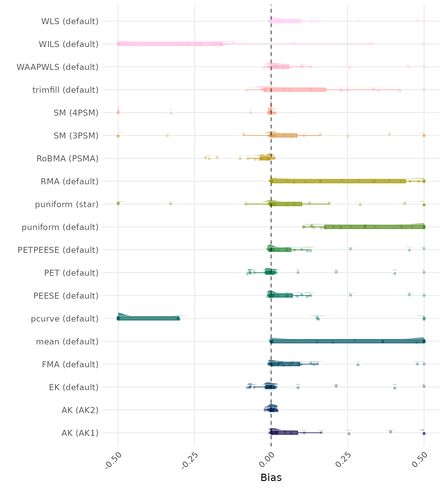
Bias is the average difference between the meta-analytic estimate and the true effect across simulation runs. Ideally, this value should be close to 0. Values lower than -0.5 or larger than 0.5 are visualized as -0.5 and 0.5 respectively.
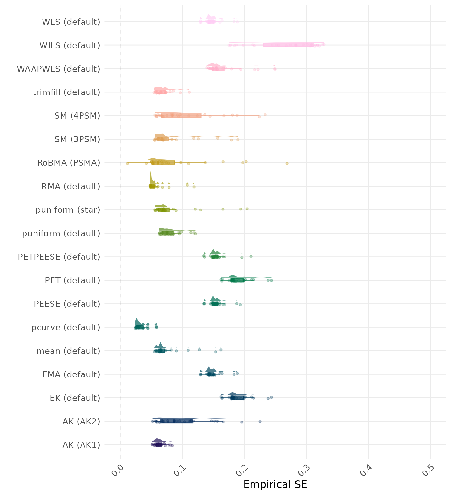
The empirical SE is the standard deviation of the meta-analytic estimate across simulation runs. A lower empirical SE indicates less variability and better method performance. Values larger than 0.5 are visualized as 0.5.
The interval score measures the accuracy of a confidence interval by combining its width and coverage. It penalizes intervals that are too wide or that fail to include the true value. A lower interval score indicates a better method. Values larger than 100 are visualized as 100.
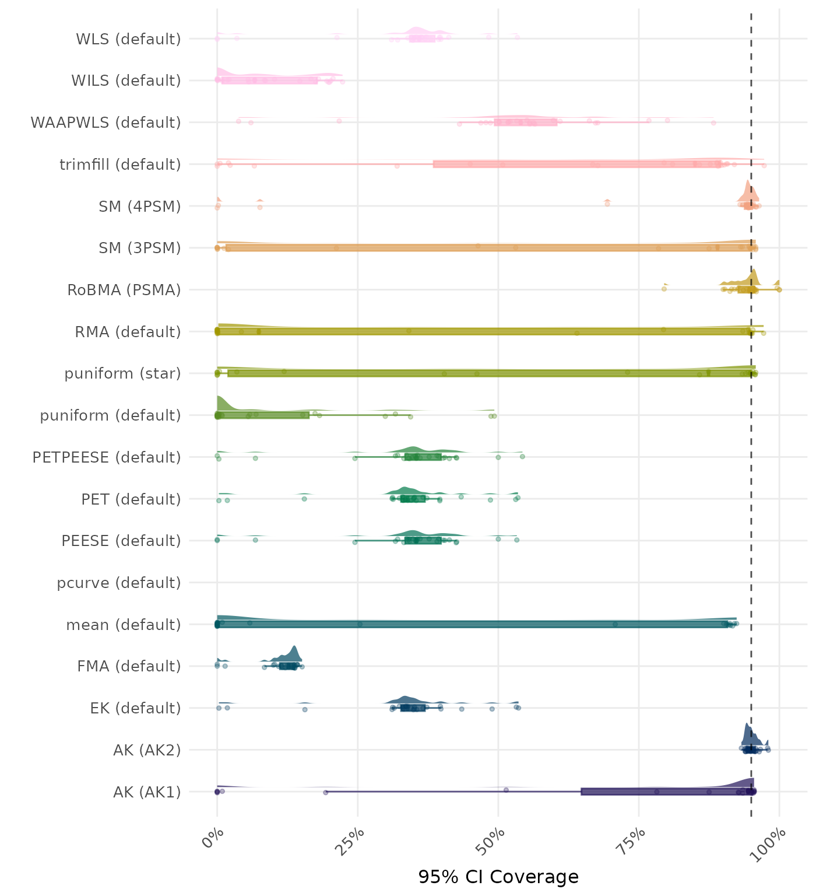
95% CI coverage is the proportion of simulation runs in which the 95% confidence interval contained the true effect. Ideally, this value should be close to the nominal level of 95%.
95% CI width is the average length of the 95% confidence interval for the true effect. A lower average 95% CI length indicates a better method.
The positive likelihood ratio is an overall summary measure of hypothesis testing performance that combines power and type I error rate. It indicates how much a significant test result changes the odds of the alternative hypothesis versus the null hypothesis. A useful method has a positive likelihood ratio greater than 1 (or a log positive likelihood ratio greater than 0). A higher (log) positive likelihood ratio indicates a better method.
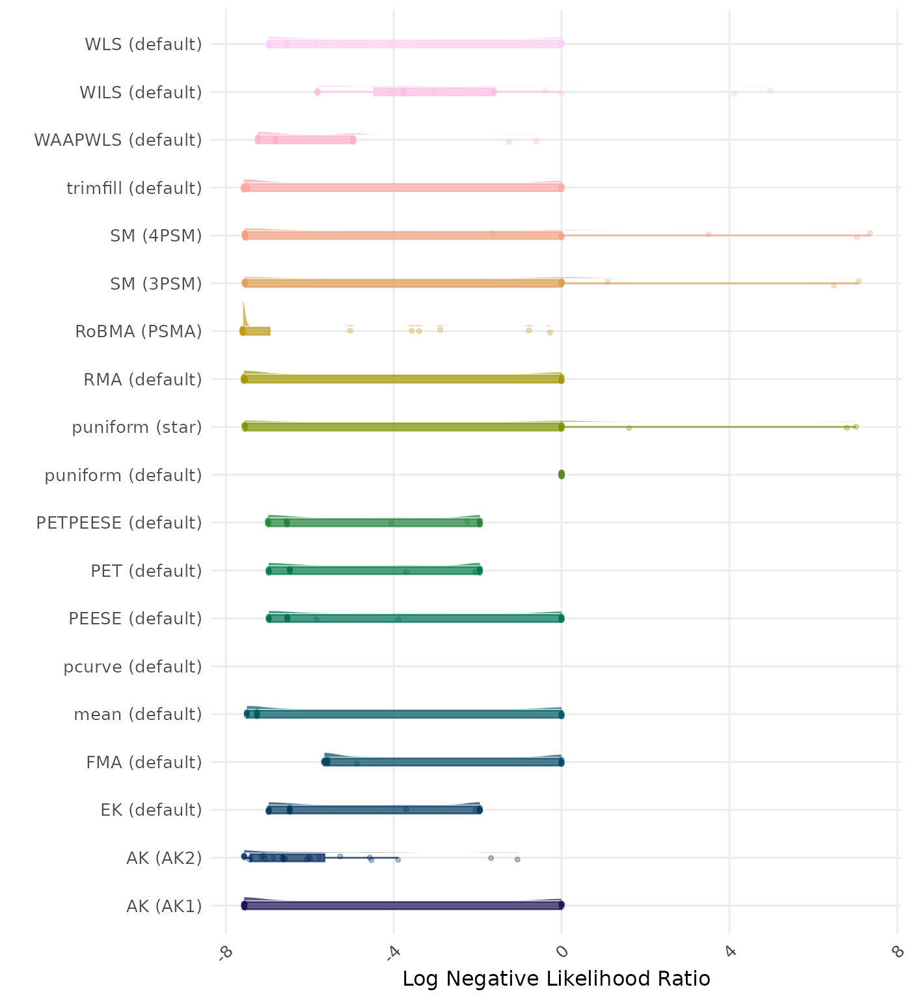
The negative likelihood ratio is an overall summary measure of hypothesis testing performance that combines power and type I error rate. It indicates how much a non-significant test result changes the odds of the alternative hypothesis versus the null hypothesis. A useful method has a negative likelihood ratio less than 1 (or a log negative likelihood ratio less than 0). A lower (log) negative likelihood ratio indicates a better method.
The type I error rate is the proportion of simulation runs in which the null hypothesis of no effect was incorrectly rejected when it was true. Ideally, this value should be close to the nominal level of 5%.
The power is the proportion of simulation runs in which the null hypothesis of no effect was correctly rejected when the alternative hypothesis was true. A higher power indicates a better method.
By-Condition Performance (Replacement in Case of Non-Convergence)
The results below incorporate method replacement to handle non-convergence. If a method fails to converge, its results are replaced with the results from a simpler method (e.g., random-effects meta-analysis without publication bias adjustment). This emulates what a data analyst may do in practice in case a method does not converge. However, note that these results do not correspond to “pure” method performance as they might combine multiple different methods. See Method Replacement Strategy for details of the method replacement specification.
RMSE (Root Mean Square Error) is an overall summary measure of estimation performance that combines bias and empirical SE. RMSE is the square root of the average squared difference between the meta-analytic estimate and the true effect across simulation runs. A lower RMSE indicates a better method. Values larger than 0.5 are visualized as 0.5.
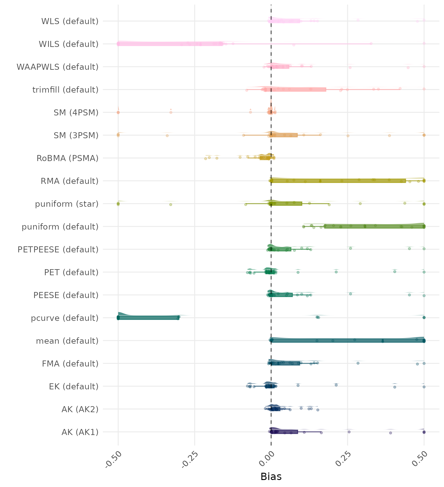
Bias is the average difference between the meta-analytic estimate and the true effect across simulation runs. Ideally, this value should be close to 0. Values lower than -0.5 or larger than 0.5 are visualized as -0.5 and 0.5 respectively.
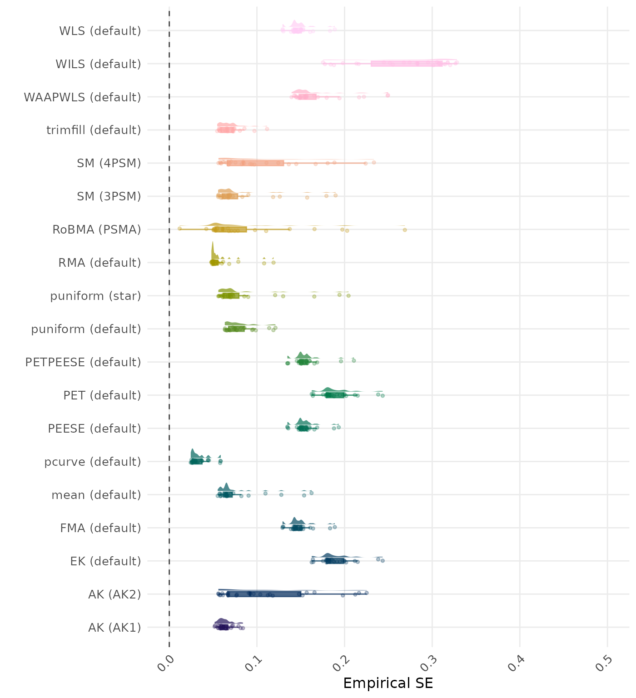
The empirical SE is the standard deviation of the meta-analytic estimate across simulation runs. A lower empirical SE indicates less variability and better method performance. Values larger than 0.5 are visualized as 0.5.

The interval score measures the accuracy of a confidence interval by combining its width and coverage. It penalizes intervals that are too wide or that fail to include the true value. A lower interval score indicates a better method. Values larger than 100 are visualized as 100.
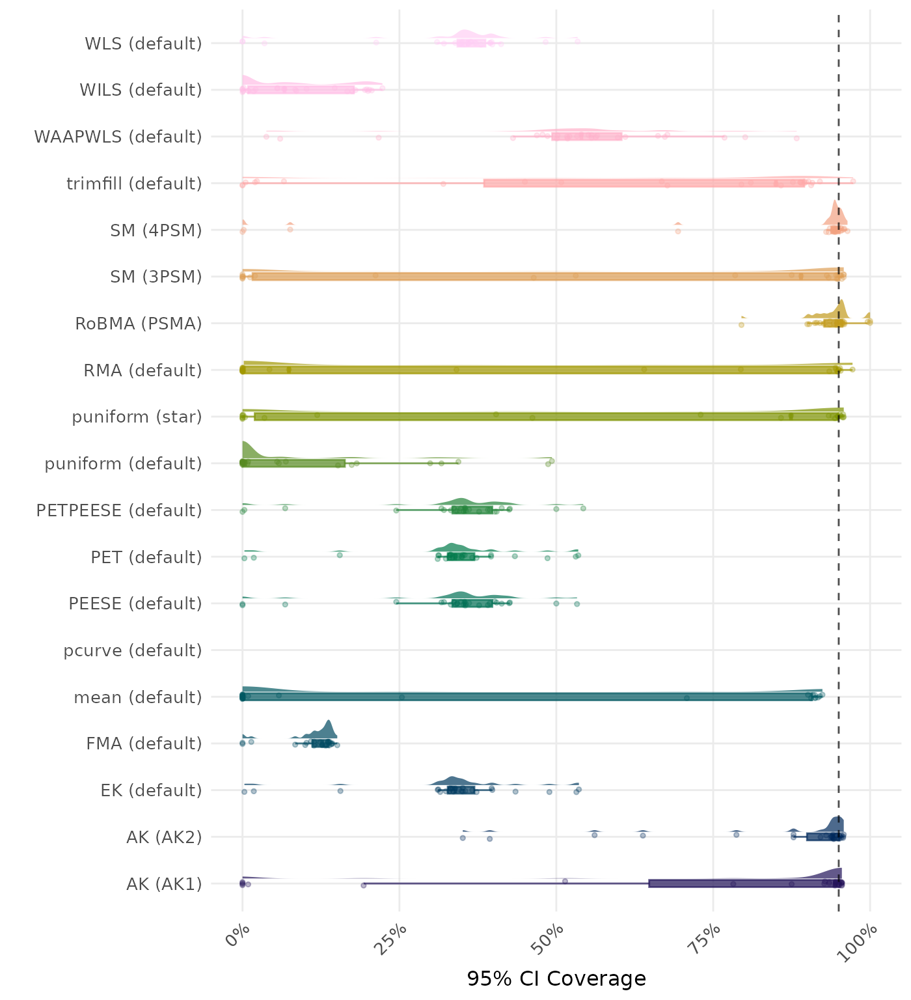
95% CI coverage is the proportion of simulation runs in which the 95% confidence interval contained the true effect. Ideally, this value should be close to the nominal level of 95%.

95% CI width is the average length of the 95% confidence interval for the true effect. A lower average 95% CI length indicates a better method.
The positive likelihood ratio is an overall summary measure of hypothesis testing performance that combines power and type I error rate. It indicates how much a significant test result changes the odds of the alternative hypothesis versus the null hypothesis. A useful method has a positive likelihood ratio greater than 1 (or a log positive likelihood ratio greater than 0). A higher (log) positive likelihood ratio indicates a better method.
The negative likelihood ratio is an overall summary measure of hypothesis testing performance that combines power and type I error rate. It indicates how much a non-significant test result changes the odds of the alternative hypothesis versus the null hypothesis. A useful method has a negative likelihood ratio less than 1 (or a log negative likelihood ratio less than 0). A lower (log) negative likelihood ratio indicates a better method.

The type I error rate is the proportion of simulation runs in which the null hypothesis of no effect was incorrectly rejected when it was true. Ideally, this value should be close to the nominal level of 5%.
The power is the proportion of simulation runs in which the null hypothesis of no effect was correctly rejected when the alternative hypothesis was true. A higher power indicates a better method.
Subset: Panel Random Effects
These results are based on Alinaghi (2018) data-generating mechanism with a total of 27 conditions.
Average Performance
Method performance measures are aggregated across all simulated conditions to provide an overall impression of method performance. However, keep in mind that a method with a high overall ranking is not necessarily the “best” method for a particular application. To select a suitable method for your application, consider also non-aggregated performance measures in conditions most relevant to your application.
| Rank | Method | Value | Rank | Method | Value |
|---|---|---|---|---|---|
| 1 | trimfill (default) | 0.542 | 1 | trimfill (default) | 0.542 |
| 2 | RoBMA (PSMA) | 0.543 | 2 | RoBMA (PSMA) | 0.543 |
| 3 | AK (AK1) | 0.555 | 3 | AK (AK1) | 0.555 |
| 4 | AK (AK2) | 0.575 | 4 | SM (4PSM) | 0.587 |
| 5 | SM (4PSM) | 0.587 | 5 | AK (AK2) | 0.598 |
| 6 | SM (3PSM) | 0.608 | 6 | SM (3PSM) | 0.608 |
| 7 | puniform (star) | 0.615 | 7 | puniform (star) | 0.615 |
| 8 | RMA (default) | 0.667 | 8 | RMA (default) | 0.667 |
| 9 | mean (default) | 0.678 | 9 | mean (default) | 0.678 |
| 10 | FMA (default) | 0.824 | 10 | FMA (default) | 0.824 |
| 10 | WLS (default) | 0.824 | 10 | WLS (default) | 0.824 |
| 12 | PEESE (default) | 0.868 | 12 | PEESE (default) | 0.868 |
| 13 | PETPEESE (default) | 0.879 | 13 | PETPEESE (default) | 0.879 |
| 14 | WAAPWLS (default) | 0.897 | 14 | WAAPWLS (default) | 0.897 |
| 15 | PET (default) | 1.071 | 15 | PET (default) | 1.071 |
| 16 | EK (default) | 1.071 | 16 | EK (default) | 1.071 |
| 17 | WILS (default) | 1.222 | 17 | WILS (default) | 1.222 |
| 18 | pcurve (default) | 1.381 | 18 | pcurve (default) | 1.381 |
| 19 | puniform (default) | 1.400 | 19 | puniform (default) | 1.400 |
RMSE (Root Mean Square Error) is an overall summary measure of estimation performance that combines bias and empirical SE. RMSE is the square root of the average squared difference between the meta-analytic estimate and the true effect across simulation runs. A lower RMSE indicates a better method.
| Rank | Method | Value | Rank | Method | Value |
|---|---|---|---|---|---|
| 1 | SM (4PSM) | 0.190 | 1 | SM (4PSM) | 0.190 |
| 2 | trimfill (default) | 0.194 | 2 | trimfill (default) | 0.194 |
| 3 | PET (default) | 0.214 | 3 | PET (default) | 0.214 |
| 4 | EK (default) | 0.214 | 4 | EK (default) | 0.214 |
| 5 | SM (3PSM) | 0.256 | 5 | SM (3PSM) | 0.256 |
| 6 | AK (AK2) | 0.256 | 6 | WILS (default) | -0.263 |
| 7 | WILS (default) | -0.263 | 7 | PETPEESE (default) | 0.266 |
| 8 | PETPEESE (default) | 0.266 | 8 | WAAPWLS (default) | 0.270 |
| 9 | WAAPWLS (default) | 0.270 | 9 | puniform (star) | 0.272 |
| 10 | puniform (star) | 0.272 | 10 | PEESE (default) | 0.276 |
| 11 | PEESE (default) | 0.276 | 11 | AK (AK2) | 0.293 |
| 12 | WLS (default) | 0.301 | 12 | WLS (default) | 0.301 |
| 13 | FMA (default) | 0.301 | 13 | FMA (default) | 0.301 |
| 14 | RoBMA (PSMA) | 0.336 | 14 | RoBMA (PSMA) | 0.336 |
| 15 | AK (AK1) | 0.389 | 15 | AK (AK1) | 0.389 |
| 16 | RMA (default) | 0.528 | 16 | RMA (default) | 0.528 |
| 17 | mean (default) | 0.538 | 17 | mean (default) | 0.538 |
| 18 | pcurve (default) | -1.115 | 18 | pcurve (default) | -1.115 |
| 19 | puniform (default) | 1.362 | 19 | puniform (default) | 1.362 |
Bias is the average difference between the meta-analytic estimate and the true effect across simulation runs. Ideally, this value should be close to 0.
| Rank | Method | Value | Rank | Method | Value |
|---|---|---|---|---|---|
| 1 | pcurve (default) | 0.098 | 1 | pcurve (default) | 0.098 |
| 2 | RMA (default) | 0.299 | 2 | RMA (default) | 0.299 |
| 3 | mean (default) | 0.302 | 3 | mean (default) | 0.302 |
| 4 | puniform (default) | 0.309 | 4 | puniform (default) | 0.309 |
| 5 | AK (AK1) | 0.313 | 5 | AK (AK1) | 0.313 |
| 6 | RoBMA (PSMA) | 0.321 | 6 | RoBMA (PSMA) | 0.321 |
| 7 | puniform (star) | 0.378 | 7 | puniform (star) | 0.378 |
| 8 | SM (3PSM) | 0.380 | 8 | SM (3PSM) | 0.380 |
| 9 | trimfill (default) | 0.393 | 9 | trimfill (default) | 0.393 |
| 10 | SM (4PSM) | 0.454 | 10 | SM (4PSM) | 0.454 |
| 11 | AK (AK2) | 0.466 | 11 | AK (AK2) | 0.467 |
| 12 | FMA (default) | 0.699 | 12 | FMA (default) | 0.699 |
| 13 | WLS (default) | 0.699 | 13 | WLS (default) | 0.699 |
| 14 | PEESE (default) | 0.758 | 14 | PEESE (default) | 0.758 |
| 15 | PETPEESE (default) | 0.771 | 15 | PETPEESE (default) | 0.771 |
| 16 | WAAPWLS (default) | 0.795 | 16 | WAAPWLS (default) | 0.795 |
| 17 | PET (default) | 0.985 | 17 | PET (default) | 0.985 |
| 18 | EK (default) | 0.985 | 18 | EK (default) | 0.985 |
| 19 | WILS (default) | 1.079 | 19 | WILS (default) | 1.079 |
The empirical SE is the standard deviation of the meta-analytic estimate across simulation runs. A lower empirical SE indicates less variability and better method performance.
| Rank | Method | Value | Rank | Method | Value |
|---|---|---|---|---|---|
| 1 | FMA (default) | 5.413 | 1 | FMA (default) | 5.413 |
| 2 | RoBMA (PSMA) | 6.200 | 2 | RoBMA (PSMA) | 6.200 |
| 3 | AK (AK2) | 8.596 | 3 | SM (4PSM) | 9.418 |
| 4 | SM (4PSM) | 9.418 | 4 | AK (AK2) | 9.662 |
| 5 | RMA (default) | 10.943 | 5 | RMA (default) | 10.943 |
| 6 | trimfill (default) | 11.857 | 6 | trimfill (default) | 11.857 |
| 7 | SM (3PSM) | 12.542 | 7 | SM (3PSM) | 12.542 |
| 8 | AK (AK1) | 12.674 | 8 | AK (AK1) | 12.674 |
| 9 | puniform (star) | 13.940 | 9 | puniform (star) | 13.940 |
| 10 | WAAPWLS (default) | 20.395 | 10 | WAAPWLS (default) | 20.395 |
| 11 | mean (default) | 20.420 | 11 | mean (default) | 20.420 |
| 12 | WLS (default) | 21.589 | 12 | WLS (default) | 21.589 |
| 13 | PEESE (default) | 22.620 | 13 | PEESE (default) | 22.620 |
| 14 | PETPEESE (default) | 22.879 | 14 | PETPEESE (default) | 22.879 |
| 15 | EK (default) | 27.177 | 15 | EK (default) | 27.177 |
| 16 | PET (default) | 27.193 | 16 | PET (default) | 27.193 |
| 17 | WILS (default) | 34.217 | 17 | WILS (default) | 34.217 |
| 18 | puniform (default) | 47.302 | 18 | puniform (default) | 47.302 |
| 19 | pcurve (default) | NaN | 19 | pcurve (default) | NaN |
The interval score measures the accuracy of a confidence interval by combining its width and coverage. It penalizes intervals that are too wide or that fail to include the true value. A lower interval score indicates a better method.
| Rank | Method | Value | Rank | Method | Value |
|---|---|---|---|---|---|
| 1 | FMA (default) | 0.848 | 1 | FMA (default) | 0.848 |
| 2 | RoBMA (PSMA) | 0.710 | 2 | RoBMA (PSMA) | 0.710 |
| 3 | RMA (default) | 0.531 | 3 | RMA (default) | 0.531 |
| 4 | AK (AK2) | 0.502 | 4 | SM (4PSM) | 0.474 |
| 5 | SM (4PSM) | 0.474 | 5 | AK (AK2) | 0.467 |
| 6 | SM (3PSM) | 0.392 | 6 | SM (3PSM) | 0.392 |
| 7 | AK (AK1) | 0.334 | 7 | AK (AK1) | 0.334 |
| 8 | puniform (star) | 0.326 | 8 | puniform (star) | 0.326 |
| 9 | trimfill (default) | 0.313 | 9 | trimfill (default) | 0.313 |
| 10 | WAAPWLS (default) | 0.226 | 10 | WAAPWLS (default) | 0.226 |
| 11 | mean (default) | 0.175 | 11 | mean (default) | 0.175 |
| 12 | WLS (default) | 0.145 | 12 | WLS (default) | 0.145 |
| 13 | PETPEESE (default) | 0.145 | 13 | PETPEESE (default) | 0.145 |
| 14 | EK (default) | 0.145 | 14 | EK (default) | 0.145 |
| 15 | PET (default) | 0.144 | 15 | PET (default) | 0.144 |
| 16 | PEESE (default) | 0.144 | 16 | PEESE (default) | 0.144 |
| 17 | WILS (default) | 0.081 | 17 | WILS (default) | 0.081 |
| 18 | puniform (default) | 0.006 | 18 | puniform (default) | 0.006 |
| 19 | pcurve (default) | NaN | 19 | pcurve (default) | NaN |
95% CI coverage is the proportion of simulation runs in which the 95% confidence interval contained the true effect. Ideally, this value should be close to the nominal level of 95%.
| Rank | Method | Value | Rank | Method | Value |
|---|---|---|---|---|---|
| 1 | mean (default) | 0.251 | 1 | mean (default) | 0.251 |
| 2 | WILS (default) | 0.283 | 2 | WILS (default) | 0.283 |
| 3 | WLS (default) | 0.299 | 3 | WLS (default) | 0.299 |
| 4 | PEESE (default) | 0.312 | 4 | PEESE (default) | 0.312 |
| 5 | PETPEESE (default) | 0.318 | 5 | PETPEESE (default) | 0.318 |
| 6 | puniform (default) | 0.383 | 6 | puniform (default) | 0.383 |
| 7 | trimfill (default) | 0.401 | 7 | trimfill (default) | 0.401 |
| 8 | PET (default) | 0.401 | 8 | PET (default) | 0.401 |
| 9 | EK (default) | 0.402 | 9 | EK (default) | 0.402 |
| 10 | AK (AK1) | 0.437 | 10 | AK (AK1) | 0.437 |
| 11 | puniform (star) | 0.487 | 11 | puniform (star) | 0.487 |
| 12 | WAAPWLS (default) | 0.527 | 12 | WAAPWLS (default) | 0.527 |
| 13 | SM (3PSM) | 0.579 | 13 | SM (3PSM) | 0.579 |
| 14 | SM (4PSM) | 0.733 | 14 | SM (4PSM) | 0.733 |
| 15 | AK (AK2) | 0.784 | 15 | AK (AK2) | 0.759 |
| 16 | RMA (default) | 1.060 | 16 | RMA (default) | 1.060 |
| 17 | RoBMA (PSMA) | 1.144 | 17 | RoBMA (PSMA) | 1.144 |
| 18 | FMA (default) | 2.855 | 18 | FMA (default) | 2.855 |
| 19 | pcurve (default) | NaN | 19 | pcurve (default) | NaN |
95% CI width is the average length of the 95% confidence interval for the true effect. A lower average 95% CI length indicates a better method.
| Rank | Method | Log Value | Rank | Method | Log Value |
|---|---|---|---|---|---|
| 1 | RoBMA (PSMA) | 3.448 | 1 | RoBMA (PSMA) | 3.448 |
| 2 | RMA (default) | 1.974 | 2 | RMA (default) | 1.974 |
| 3 | FMA (default) | 1.533 | 3 | FMA (default) | 1.533 |
| 4 | AK (AK2) | 0.691 | 4 | AK (AK2) | 0.686 |
| 5 | SM (4PSM) | 0.570 | 5 | SM (4PSM) | 0.570 |
| 6 | AK (AK1) | 0.506 | 6 | AK (AK1) | 0.506 |
| 7 | SM (3PSM) | 0.421 | 7 | SM (3PSM) | 0.421 |
| 8 | trimfill (default) | 0.341 | 8 | trimfill (default) | 0.341 |
| 9 | mean (default) | 0.265 | 9 | mean (default) | 0.265 |
| 10 | puniform (star) | 0.189 | 10 | puniform (star) | 0.189 |
| 11 | WAAPWLS (default) | 0.182 | 11 | WAAPWLS (default) | 0.182 |
| 12 | PETPEESE (default) | 0.144 | 12 | PETPEESE (default) | 0.144 |
| 13 | WLS (default) | 0.134 | 13 | WLS (default) | 0.134 |
| 14 | PEESE (default) | 0.132 | 14 | PEESE (default) | 0.132 |
| 15 | EK (default) | 0.116 | 15 | EK (default) | 0.116 |
| 15 | PET (default) | 0.116 | 15 | PET (default) | 0.116 |
| 17 | WILS (default) | 0.038 | 17 | WILS (default) | 0.038 |
| 18 | puniform (default) | 0.000 | 18 | puniform (default) | 0.000 |
| 19 | pcurve (default) | NaN | 19 | pcurve (default) | NaN |
The positive likelihood ratio is an overall summary measure of hypothesis testing performance that combines power and type I error rate. It indicates how much a significant test result changes the odds of the alternative hypothesis versus the null hypothesis. A useful method has a positive likelihood ratio greater than 1 (or a log positive likelihood ratio greater than 0). A higher (log) positive likelihood ratio indicates a better method.
| Rank | Method | Log Value | Rank | Method | Log Value |
|---|---|---|---|---|---|
| 1 | RMA (default) | -5.174 | 1 | RMA (default) | -5.174 |
| 2 | RoBMA (PSMA) | -5.000 | 2 | RoBMA (PSMA) | -5.000 |
| 3 | SM (4PSM) | -4.819 | 3 | SM (4PSM) | -4.819 |
| 4 | trimfill (default) | -4.744 | 4 | trimfill (default) | -4.744 |
| 5 | AK (AK2) | -4.522 | 5 | AK (AK2) | -4.674 |
| 6 | AK (AK1) | -4.122 | 6 | AK (AK1) | -4.122 |
| 7 | SM (3PSM) | -3.982 | 7 | SM (3PSM) | -3.982 |
| 8 | mean (default) | -3.862 | 8 | mean (default) | -3.862 |
| 9 | WLS (default) | -3.651 | 9 | WLS (default) | -3.651 |
| 10 | puniform (star) | -3.640 | 10 | puniform (star) | -3.640 |
| 11 | PEESE (default) | -3.558 | 11 | PEESE (default) | -3.558 |
| 12 | WAAPWLS (default) | -3.230 | 12 | WAAPWLS (default) | -3.230 |
| 13 | PETPEESE (default) | -3.213 | 13 | PETPEESE (default) | -3.213 |
| 14 | EK (default) | -3.094 | 14 | EK (default) | -3.094 |
| 14 | PET (default) | -3.094 | 14 | PET (default) | -3.094 |
| 16 | FMA (default) | -2.055 | 16 | FMA (default) | -2.055 |
| 17 | WILS (default) | -1.760 | 17 | WILS (default) | -1.760 |
| 18 | puniform (default) | 0.000 | 18 | puniform (default) | 0.000 |
| 19 | pcurve (default) | NaN | 19 | pcurve (default) | NaN |
The negative likelihood ratio is an overall summary measure of hypothesis testing performance that combines power and type I error rate. It indicates how much a non-significant test result changes the odds of the alternative hypothesis versus the null hypothesis. A useful method has a negative likelihood ratio less than 1 (or a log negative likelihood ratio less than 0). A lower (log) negative likelihood ratio indicates a better method.
| Rank | Method | Value | Rank | Method | Value |
|---|---|---|---|---|---|
| 1 | FMA (default) | 0.263 | 1 | FMA (default) | 0.263 |
| 2 | RoBMA (PSMA) | 0.273 | 2 | RoBMA (PSMA) | 0.273 |
| 3 | RMA (default) | 0.361 | 3 | RMA (default) | 0.361 |
| 4 | AK (AK2) | 0.501 | 4 | AK (AK2) | 0.506 |
| 5 | SM (4PSM) | 0.559 | 5 | SM (4PSM) | 0.559 |
| 6 | AK (AK1) | 0.642 | 6 | AK (AK1) | 0.642 |
| 7 | SM (3PSM) | 0.671 | 7 | SM (3PSM) | 0.671 |
| 8 | trimfill (default) | 0.715 | 8 | trimfill (default) | 0.715 |
| 9 | mean (default) | 0.783 | 9 | mean (default) | 0.783 |
| 10 | WAAPWLS (default) | 0.791 | 10 | WAAPWLS (default) | 0.791 |
| 11 | PETPEESE (default) | 0.832 | 11 | PETPEESE (default) | 0.832 |
| 12 | puniform (star) | 0.844 | 12 | puniform (star) | 0.844 |
| 13 | WLS (default) | 0.860 | 13 | WLS (default) | 0.860 |
| 14 | PEESE (default) | 0.861 | 14 | PEESE (default) | 0.861 |
| 15 | EK (default) | 0.864 | 15 | EK (default) | 0.864 |
| 15 | PET (default) | 0.864 | 15 | PET (default) | 0.864 |
| 17 | WILS (default) | 0.931 | 17 | WILS (default) | 0.931 |
| 18 | puniform (default) | 1.000 | 18 | puniform (default) | 1.000 |
| 19 | pcurve (default) | NaN | 19 | pcurve (default) | NaN |
The type I error rate is the proportion of simulation runs in which the null hypothesis of no effect was incorrectly rejected when it was true. Ideally, this value should be close to the nominal level of 5%.
| Rank | Method | Value | Rank | Method | Value |
|---|---|---|---|---|---|
| 1 | puniform (default) | 1.000 | 1 | puniform (default) | 1.000 |
| 2 | mean (default) | 0.995 | 2 | mean (default) | 0.995 |
| 3 | puniform (star) | 0.992 | 3 | puniform (star) | 0.992 |
| 4 | AK (AK1) | 0.991 | 4 | AK (AK1) | 0.991 |
| 5 | WLS (default) | 0.980 | 5 | WLS (default) | 0.980 |
| 6 | PEESE (default) | 0.979 | 6 | PEESE (default) | 0.979 |
| 7 | trimfill (default) | 0.977 | 7 | trimfill (default) | 0.977 |
| 8 | EK (default) | 0.969 | 8 | EK (default) | 0.969 |
| 8 | PET (default) | 0.969 | 8 | PET (default) | 0.969 |
| 10 | WILS (default) | 0.968 | 10 | WILS (default) | 0.968 |
| 11 | PETPEESE (default) | 0.959 | 11 | PETPEESE (default) | 0.959 |
| 12 | RMA (default) | 0.955 | 12 | RMA (default) | 0.955 |
| 13 | SM (3PSM) | 0.950 | 13 | SM (3PSM) | 0.950 |
| 14 | WAAPWLS (default) | 0.948 | 14 | WAAPWLS (default) | 0.948 |
| 15 | AK (AK2) | 0.943 | 15 | AK (AK2) | 0.943 |
| 16 | SM (4PSM) | 0.935 | 16 | SM (4PSM) | 0.935 |
| 17 | RoBMA (PSMA) | 0.890 | 17 | RoBMA (PSMA) | 0.890 |
| 18 | FMA (default) | 0.785 | 18 | FMA (default) | 0.785 |
| 19 | pcurve (default) | NaN | 19 | pcurve (default) | NaN |
The power is the proportion of simulation runs in which the null hypothesis of no effect was correctly rejected when the alternative hypothesis was true. A higher power indicates a better method.
By-Condition Performance (Conditional on Method Convergence)
The results below are conditional on method convergence. Note that the methods might differ in convergence rate and are therefore not compared on the same data sets.
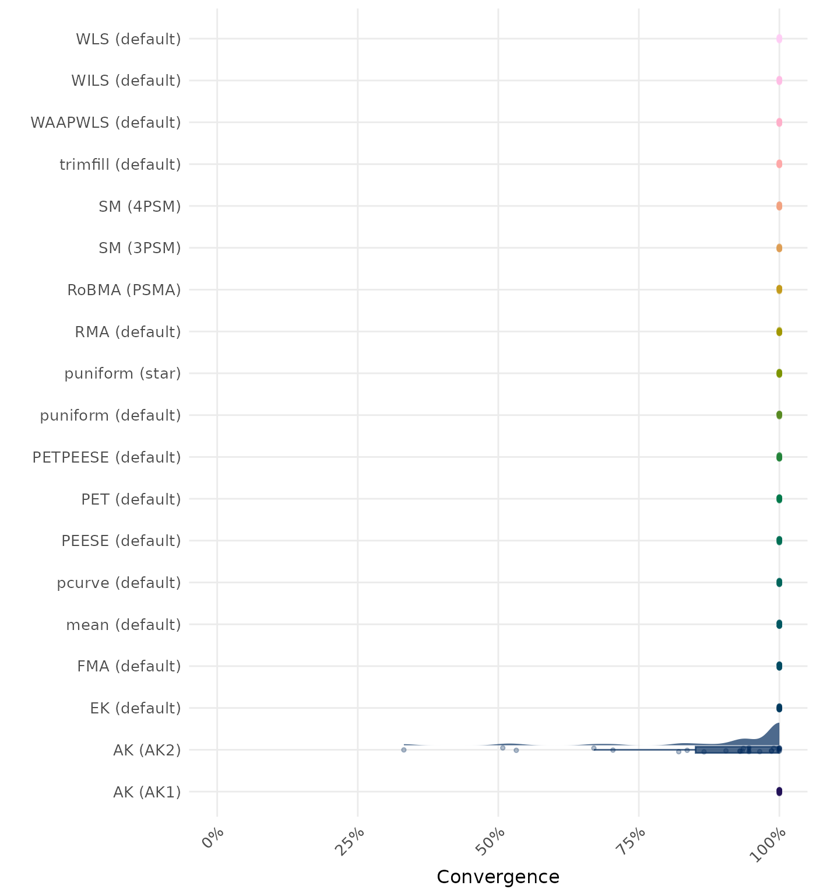
RMSE (Root Mean Square Error) is an overall summary measure of estimation performance that combines bias and empirical SE. RMSE is the square root of the average squared difference between the meta-analytic estimate and the true effect across simulation runs. A lower RMSE indicates a better method. Values larger than 0.5 are visualized as 0.5.
Bias is the average difference between the meta-analytic estimate and the true effect across simulation runs. Ideally, this value should be close to 0. Values lower than -0.5 or larger than 0.5 are visualized as -0.5 and 0.5 respectively.
The empirical SE is the standard deviation of the meta-analytic estimate across simulation runs. A lower empirical SE indicates less variability and better method performance. Values larger than 0.5 are visualized as 0.5.
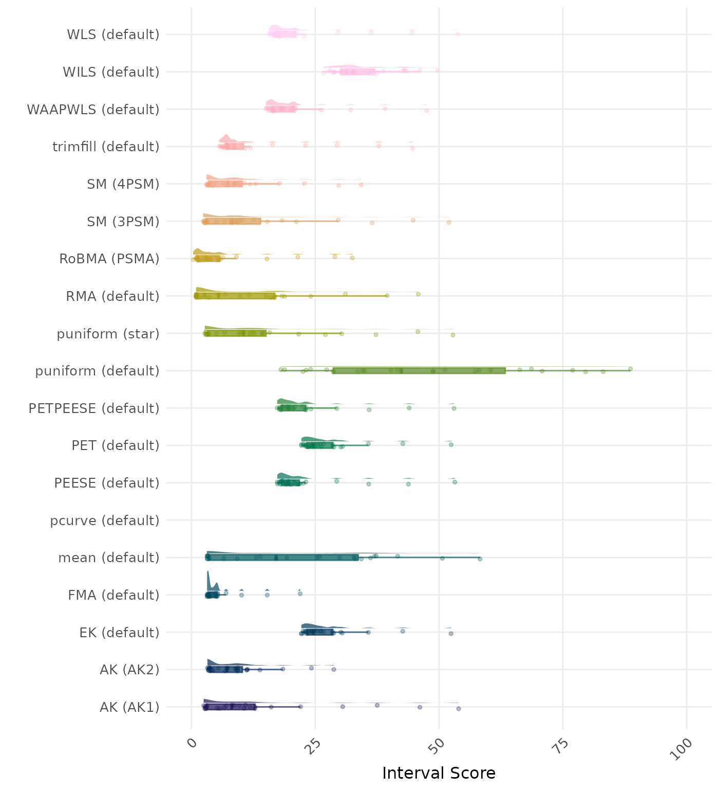
The interval score measures the accuracy of a confidence interval by combining its width and coverage. It penalizes intervals that are too wide or that fail to include the true value. A lower interval score indicates a better method. Values larger than 100 are visualized as 100.
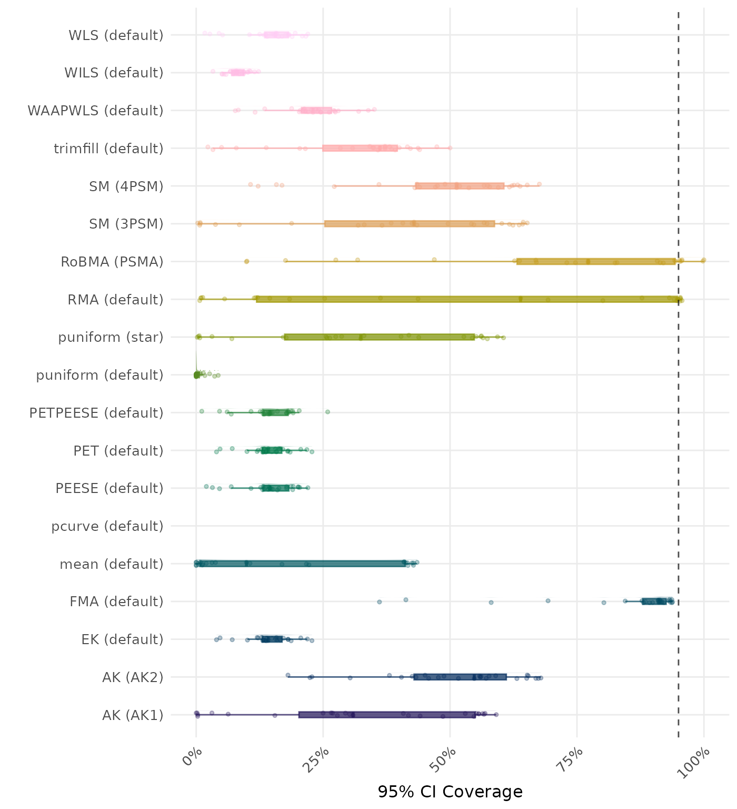
95% CI coverage is the proportion of simulation runs in which the 95% confidence interval contained the true effect. Ideally, this value should be close to the nominal level of 95%.
95% CI width is the average length of the 95% confidence interval for the true effect. A lower average 95% CI length indicates a better method.
The positive likelihood ratio is an overall summary measure of hypothesis testing performance that combines power and type I error rate. It indicates how much a significant test result changes the odds of the alternative hypothesis versus the null hypothesis. A useful method has a positive likelihood ratio greater than 1 (or a log positive likelihood ratio greater than 0). A higher (log) positive likelihood ratio indicates a better method.
The negative likelihood ratio is an overall summary measure of hypothesis testing performance that combines power and type I error rate. It indicates how much a non-significant test result changes the odds of the alternative hypothesis versus the null hypothesis. A useful method has a negative likelihood ratio less than 1 (or a log negative likelihood ratio less than 0). A lower (log) negative likelihood ratio indicates a better method.
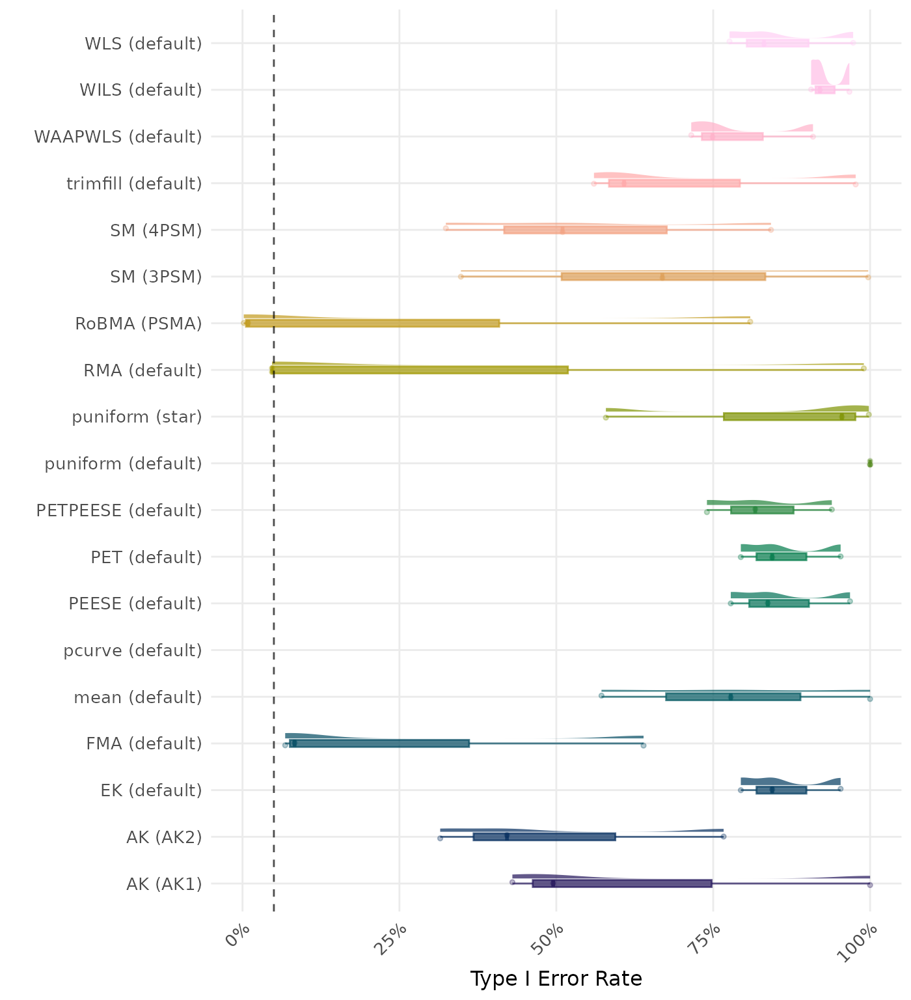
The type I error rate is the proportion of simulation runs in which the null hypothesis of no effect was incorrectly rejected when it was true. Ideally, this value should be close to the nominal level of 5%.
The power is the proportion of simulation runs in which the null hypothesis of no effect was correctly rejected when the alternative hypothesis was true. A higher power indicates a better method.
By-Condition Performance (Replacement in Case of Non-Convergence)
The results below incorporate method replacement to handle non-convergence. If a method fails to converge, its results are replaced with the results from a simpler method (e.g., random-effects meta-analysis without publication bias adjustment). This emulates what a data analyst may do in practice in case a method does not converge. However, note that these results do not correspond to “pure” method performance as they might combine multiple different methods. See Method Replacement Strategy for details of the method replacement specification.
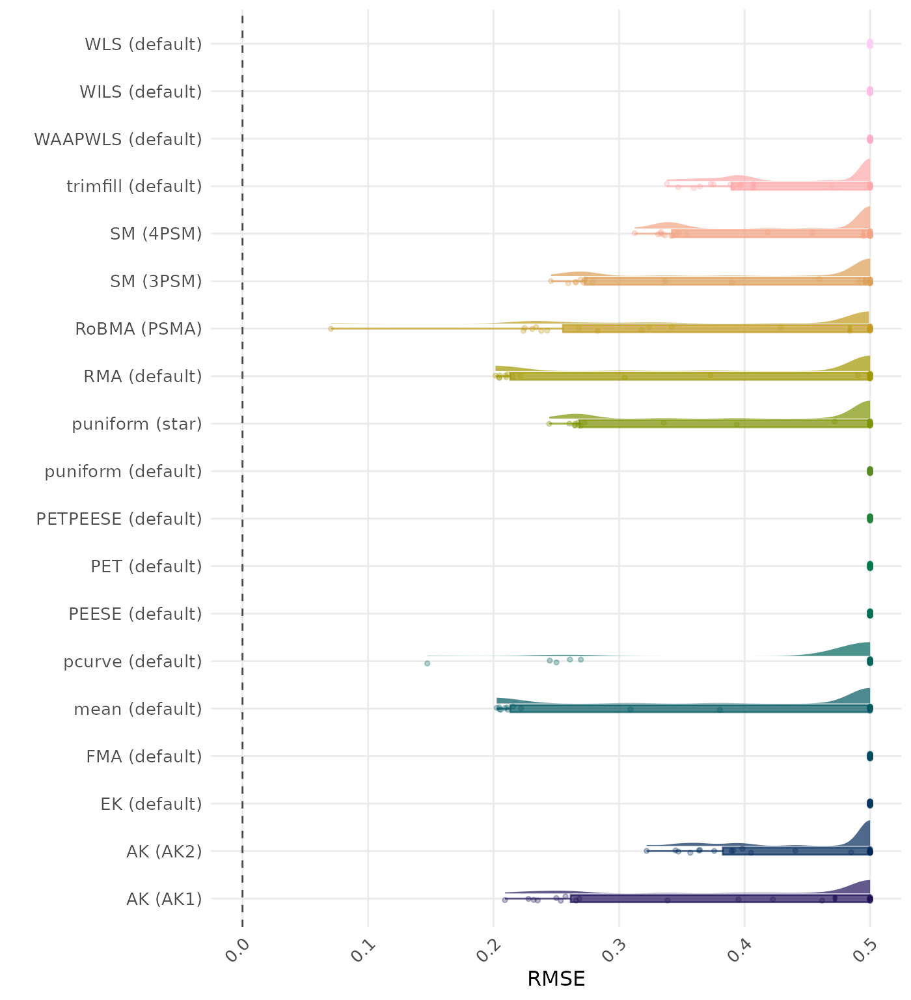
RMSE (Root Mean Square Error) is an overall summary measure of estimation performance that combines bias and empirical SE. RMSE is the square root of the average squared difference between the meta-analytic estimate and the true effect across simulation runs. A lower RMSE indicates a better method. Values larger than 0.5 are visualized as 0.5.
Bias is the average difference between the meta-analytic estimate and the true effect across simulation runs. Ideally, this value should be close to 0. Values lower than -0.5 or larger than 0.5 are visualized as -0.5 and 0.5 respectively.
The empirical SE is the standard deviation of the meta-analytic estimate across simulation runs. A lower empirical SE indicates less variability and better method performance. Values larger than 0.5 are visualized as 0.5.

The interval score measures the accuracy of a confidence interval by combining its width and coverage. It penalizes intervals that are too wide or that fail to include the true value. A lower interval score indicates a better method. Values larger than 100 are visualized as 100.
95% CI coverage is the proportion of simulation runs in which the 95% confidence interval contained the true effect. Ideally, this value should be close to the nominal level of 95%.
95% CI width is the average length of the 95% confidence interval for the true effect. A lower average 95% CI length indicates a better method.
The positive likelihood ratio is an overall summary measure of hypothesis testing performance that combines power and type I error rate. It indicates how much a significant test result changes the odds of the alternative hypothesis versus the null hypothesis. A useful method has a positive likelihood ratio greater than 1 (or a log positive likelihood ratio greater than 0). A higher (log) positive likelihood ratio indicates a better method.
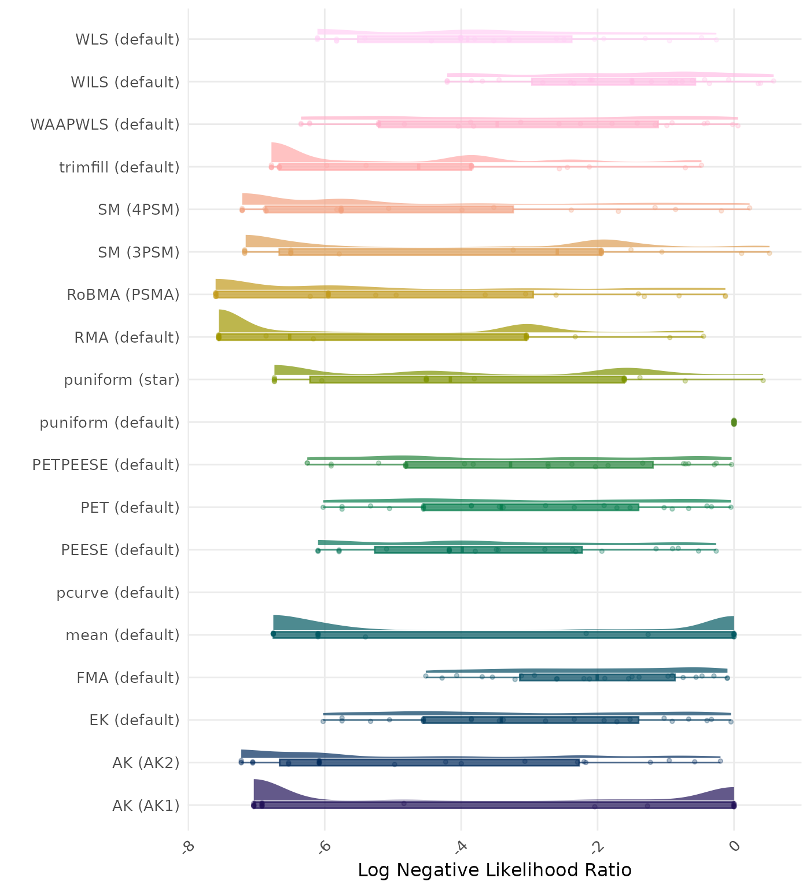
The negative likelihood ratio is an overall summary measure of hypothesis testing performance that combines power and type I error rate. It indicates how much a non-significant test result changes the odds of the alternative hypothesis versus the null hypothesis. A useful method has a negative likelihood ratio less than 1 (or a log negative likelihood ratio less than 0). A lower (log) negative likelihood ratio indicates a better method.
The type I error rate is the proportion of simulation runs in which the null hypothesis of no effect was incorrectly rejected when it was true. Ideally, this value should be close to the nominal level of 5%.
The power is the proportion of simulation runs in which the null hypothesis of no effect was correctly rejected when the alternative hypothesis was true. A higher power indicates a better method.
Session Info
This report was compiled on Sun Oct 19 14:05:34 2025 (UTC) using the following computational environment
## R version 4.5.1 (2025-06-13)
## Platform: x86_64-pc-linux-gnu
## Running under: Ubuntu 24.04.3 LTS
##
## Matrix products: default
## BLAS: /usr/lib/x86_64-linux-gnu/openblas-pthread/libblas.so.3
## LAPACK: /usr/lib/x86_64-linux-gnu/openblas-pthread/libopenblasp-r0.3.26.so; LAPACK version 3.12.0
##
## locale:
## [1] LC_CTYPE=C.UTF-8 LC_NUMERIC=C LC_TIME=C.UTF-8
## [4] LC_COLLATE=C.UTF-8 LC_MONETARY=C.UTF-8 LC_MESSAGES=C.UTF-8
## [7] LC_PAPER=C.UTF-8 LC_NAME=C LC_ADDRESS=C
## [10] LC_TELEPHONE=C LC_MEASUREMENT=C.UTF-8 LC_IDENTIFICATION=C
##
## time zone: UTC
## tzcode source: system (glibc)
##
## attached base packages:
## [1] stats graphics grDevices utils datasets methods base
##
## other attached packages:
## [1] scales_1.4.0 ggdist_3.3.3
## [3] ggplot2_4.0.0 PublicationBiasBenchmark_0.1.0
## [5] devtools_2.4.6 usethis_3.2.1
##
## loaded via a namespace (and not attached):
## [1] gtable_0.3.6 xfun_0.53 bslib_0.9.0
## [4] htmlwidgets_1.6.4 remotes_2.5.0 lattice_0.22-7
## [7] vctrs_0.6.5 tools_4.5.1 Rdpack_2.6.4
## [10] generics_0.1.4 curl_7.0.0 sandwich_3.1-1
## [13] tibble_3.3.0 pkgconfig_2.0.3 RColorBrewer_1.1-3
## [16] S7_0.2.0 desc_1.4.3 distributional_0.5.0
## [19] lifecycle_1.0.4 compiler_4.5.1 farver_2.1.2
## [22] stringr_1.5.2 textshaping_1.0.4 htmltools_0.5.8.1
## [25] sass_0.4.10 clubSandwich_0.6.1 yaml_2.3.10
## [28] pillar_1.11.1 pkgdown_2.1.3 jquerylib_0.1.4
## [31] ellipsis_0.3.2 cachem_1.1.0 sessioninfo_1.2.3
## [34] digest_0.6.37 stringi_1.8.7 purrr_1.1.0
## [37] labeling_0.4.3 fastmap_1.2.0 grid_4.5.1
## [40] cli_3.6.5 magrittr_2.0.4 triebeard_0.4.1
## [43] crul_1.6.0 pkgbuild_1.4.8 osfr_0.2.9
## [46] withr_3.0.2 rmarkdown_2.30 httr_1.4.7
## [49] ragg_1.5.0 zoo_1.8-14 kableExtra_1.4.0
## [52] memoise_2.0.1 evaluate_1.0.5 knitr_1.50
## [55] rbibutils_2.3 viridisLite_0.4.2 rlang_1.1.6
## [58] urltools_1.7.3.1 Rcpp_1.1.0 glue_1.8.0
## [61] httpcode_0.3.0 xml2_1.4.0 pkgload_1.4.1
## [64] svglite_2.2.1 rstudioapi_0.17.1 jsonlite_2.0.0
## [67] R6_2.6.1 systemfonts_1.3.1 fs_1.6.6